Summary of Results
The Course
| Question | Course | Subject (PHY) | ||
|---|---|---|---|---|
| Mean | Standard Deviation | Mean | Standard Deviation | |
| 5. Based on your answers above, and any other factors you consider important, please provide an overall evaluation of the course. | 3.71 | 1.03 | 3.76 | 1.08 |
| Overall | 3.71 | 1.03 | 3.76 | - |
The Instructor
| Question | Course | Subject (PHY) | ||
|---|---|---|---|---|
| Mean | Standard Deviation | Mean | Standard Deviation | |
| 15. Based on your answers above, and any other factors you consider important, please provide an overall evaluation of the instructor. | 4.04 | 0.91 | 4.06 | 1.02 |
| Overall | 4.04 | 0.91 | 4.06 | - |
Detailed Results of Course Evaluation
1. How would you rate the success of the course in accomplishing its objectives as stated on the course syllabus?
1. How would you rate the success of the course in accomplishing its objectives as stated on the course syllabus?
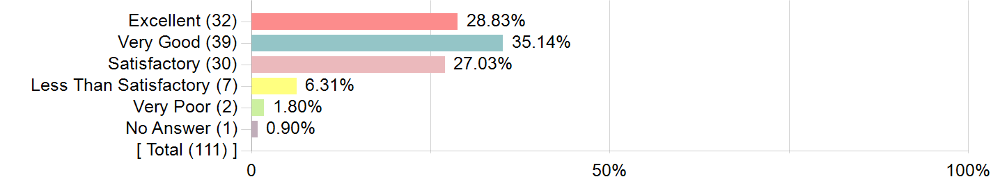
| Options | Score | Count | Percentage |
|---|---|---|---|
| Excellent | 5 | 32 | 28.83% |
| Very Good | 4 | 39 | 35.14% |
| Satisfactory | 3 | 30 | 27.03% |
| Less Than Satisfactory | 2 | 7 | 6.31% |
| Very Poor | 1 | 2 | 1.80% |
| No Answer | NRP | 1 | 0.90% |
| Statistics | Value |
|---|---|
| Invited Count | 128 |
| Response Count | 111 |
| Response Ratio | 86.72% |
| Mean | 3.84 |
| Mode | 4 |
| Sum Total | 422.00 |
| Standard Deviation | 0.98 |
2. How would you rate the use of class time (lectures, discussions, demonstrations, labs, studio work, etc.) to promote your learning?
2.
How would you rate the use of class time (lectures, discussions,
demonstrations, labs, studio work, etc.) to promote your learning?
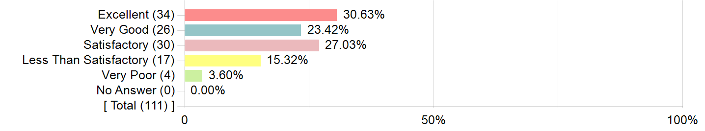
| Options | Score | Count | Percentage |
|---|---|---|---|
| Excellent | 5 | 34 | 30.63% |
| Very Good | 4 | 26 | 23.42% |
| Satisfactory | 3 | 30 | 27.03% |
| Less Than Satisfactory | 2 | 17 | 15.32% |
| Very Poor | 1 | 4 | 3.60% |
| No Answer | NRP | 0 | 0.00% |
| Statistics | Value |
|---|---|
| Invited Count | 128 |
| Response Count | 111 |
| Response Ratio | 86.72% |
| Mean | 3.62 |
| Mode | 5 |
| Sum Total | 402.00 |
| Standard Deviation | 1.18 |
3. How would you rate the use of out-of-class activities (reading assignments, homework, papers, projects, studio art practice, etc.) to promote your learning?
3.
How would you rate the use of out-of-class activities (reading
assignments, homework, papers, projects, studio art practice, etc.) to
promote your learning?
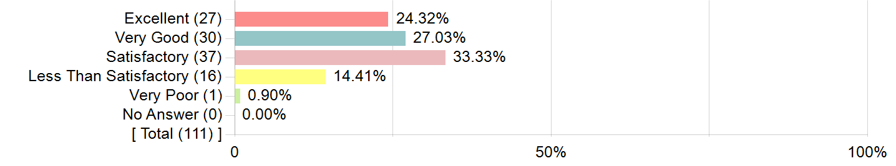
| Options | Score | Count | Percentage |
|---|---|---|---|
| Excellent | 5 | 27 | 24.32% |
| Very Good | 4 | 30 | 27.03% |
| Satisfactory | 3 | 37 | 33.33% |
| Less Than Satisfactory | 2 | 16 | 14.41% |
| Very Poor | 1 | 1 | 0.90% |
| No Answer | NRP | 0 | 0.00% |
| Statistics | Value |
|---|---|
| Invited Count | 128 |
| Response Count | 111 |
| Response Ratio | 86.72% |
| Mean | 3.59 |
| Mode | 3 |
| Sum Total | 399.00 |
| Standard Deviation | 1.04 |
4. How would you rate the way the course engaged your interest?
4. How would you rate the way the course engaged your interest?
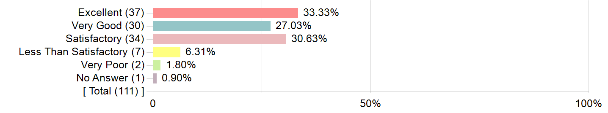
| Options | Score | Count | Percentage |
|---|---|---|---|
| Excellent | 5 | 37 | 33.33% |
| Very Good | 4 | 30 | 27.03% |
| Satisfactory | 3 | 34 | 30.63% |
| Less Than Satisfactory | 2 | 7 | 6.31% |
| Very Poor | 1 | 2 | 1.80% |
| No Answer | NRP | 1 | 0.90% |
| Statistics | Value |
|---|---|
| Invited Count | 128 |
| Response Count | 111 |
| Response Ratio | 86.72% |
| Mean | 3.85 |
| Mode | 5 |
| Sum Total | 423.00 |
| Standard Deviation | 1.02 |
5. Based on your answers above, and any other factors you consider important, please provide an overall evaluation of the course.
5.
Based on your answers above, and any other factors you consider
important, please provide an overall evaluation of the course.
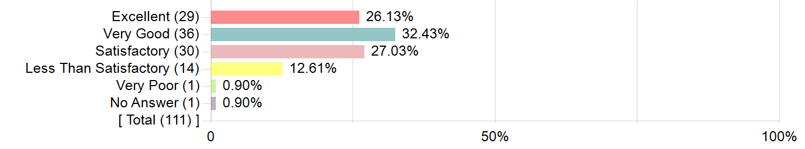
| Options | Score | Count | Percentage |
|---|---|---|---|
| Excellent | 5 | 29 | 26.13% |
| Very Good | 4 | 36 | 32.43% |
| Satisfactory | 3 | 30 | 27.03% |
| Less Than Satisfactory | 2 | 14 | 12.61% |
| Very Poor | 1 | 1 | 0.90% |
| No Answer | NRP | 1 | 0.90% |
| Statistics | Value |
|---|---|
| Invited Count | 128 |
| Response Count | 111 |
| Response Ratio | 86.72% |
| Mean | 3.71 |
| Mode | 4 |
| Sum Total | 408.00 |
| Standard Deviation | 1.03 |
6. In what ways has this course made you think differently or more deeply? Please provide examples.
| Comments |
|---|
| I think I am more engaged in describing and explaining the world around me under a physics lens. This course has given me the laguage and has got the ball rolling on how I perceive the world around me. |
| The emphasis on thinking correctly rather than getting correct answers was awesome. I loved that on a problem set if I could not get a question right, if I explained my thinking and where my confusion was that I would still get a good grade. |
| It made me question my everyday thinking by showing me real physical examples of physics working in a way you wouldn't expect. Then we went into the physics behind it and made sense of the outcomes. |
| This course took my on a journey of reasoning with my intuition and real world experience in tandem with mathematics and physics logic. At first I relied heavily on the mathematics to make sense of physics concepts, but then I started to let go and look at the bigger picture of problems we were being asked. I found more success when I used my real world experience and personal logic to reason with physics, which this course really emphasized more so than doing the mathematics. |
| For this class, I can write a whole essay. I know some of my friends were doing better than me, but still loved this class. The first exam, I was almost about to get below 50% on midterm. This brought disappointment about my grade that I would fail as most of my friends. It really has bunch of work and more content to understand, which developed more. However, Once professor David said, "I want you to experience more confusion." Back on the canvas, their was no more grades tracking. I know I have doing bad, but I would rather appreciate, on how he developed mind about physics, far ahead from ahead from grade, but to acquire knowledge from development of confusion. He must have been doing research about students developing confusions and having straight forward solutions, which was an interesting topic for me, and always raised hands to sort out my confusion. Unfortunately, I developed more of them. I don't know if that set it to be a successful research or other topic to explore. As I said, I appreciate Professor David for his efforts, and making physics bit harder for me to grow. |
| physics from a thinking perspective rather than math |
| This course changed the way that I thought about physics. I always thought physics was just a subject where you solely used equations and formulas to arrive at numerical answers. However, after taking this course, I realized physics is so much more than just math and numbers. Physics is a way of describing the universe through mathematics, observation, refining your everyday thinking. Many problems in physics can be solved using simple observation and life experiences, not just math. The math can even help to clarify those observations or to strengthen the conclusion made from those observations. Also, this course has taught me that it is okay to be wrong. Scientists are constantly wrong, and it is the pursuit of the making sense of the world due to the confusion and errors that makes science what it is. It was one of the most challenging courses I have ever taken, but I have also learned the most in this course. Although I still need more time to be fully comfortable with my confusion, this course has definitely gave me a comfortable place to start. I have applied things that I have learned, such as sense making, everyday thinking, and explaining concepts in simple terms, in this course into all aspects of my life. People understand me better, and I'm better able to communicate my confusion. I'm very grateful to have taken this course. |
| The follow up questions that we would get during class really helped me pull the strings in my mind and try to understand the concepts that we were reviewing in class. This usually happened when David would give us a problem that we knew how to solve, and change an element of it, making it feel completely new. This class also forced me to look at physics through a new, non–mathematical lens. |
| This course has made me think more about the way that I'm learning. Instead of plugging numbers into formulas, I've focused more on connecting to my everyday thinking to gain a deeper understanding of physics concepts. |
| The course is nice in the way it makes it applicable to the real world, we do alot of phyics with real life examples |
| The course had a lot of focus on working with confusion and walking through our ideas, even if they're not always right, which gives a new perspective on learning. |
| This course has challenged me to think in depth about the concepts in connection to the real world. The lab experiments specifically helped explore and experiment with various hypotheses. |
| I actually understood physics more. |
| This course taught me to work through not understanding something until I understand it and not to give up when things are hard. |
| Pproblem sets and encouragement to be confused and to express that and to struggle with that. |
| I have never spent so much time trying to really understand the concepts of physics. |
| Didn't just teach physics, the course taught how to learn physics, and more broadly how to learn. very cool. |
| This course helped me learn to think more about the tangible ways that physics functions in the universe and how we interact with it in our everyday lives. |
| I had never taken a physics course prior to this course, so this class engaged my brain in physics material that I had never before engaged in. Lectures specifically best worked to facilitate my engagement with the course. |
| The idea that rotation, energy and kinematics are actually just different ways to describe the same things was a new connection I made. |
| This course made me gain an understand of the topics by presenting me with different ways of thinking and challenging me to reconcile my own conflicting thoughts. Hearing other people's thought processes and building off the same scenarios enabled me to get a stronger grasp of the content. |
| Lectures were based on what we thought and the questions we had, so we as students were the ones who drove the class, which I had not experienced before. It was very confusing at times and honestly, I still have confusions, but I can appreciate physics as a subject more. We were forced to think multiple ways about the problems which is a skill that can be applied beyond this course. |
| Physics in a thinking context |
| I believe that this course has made us think more outside the box and connect it to real life examples that we see in our everyday life. |
| Prof Hammer stressed the idea of being comfortable with being wrong, and using this to further your understanding rather than getting discouraged. His class taught me to learn differently. |
| The course has given me a better understanding of physics and physics "thinking". I feel more adept at analysing physical systems |
| This course probably takes the #1 spot for courses I've taken that make me think more deeply. I was pretty much confused all the time – usually in good way, though! – and I worked really hard to reconcile how my physical world intuition aligns (and doesn't align) with how the physical world actually works. Collaborating on the problem sets and discussing questions in class really pushed me to think about other people's perspectives and articulate my own thoughts and questions. |
| This course has redefined my approach to learning. It helped break down the intimidation of tackling something I don't understand. David and Miguel emphasized how getting your hands dirty and actually handling your point of confusion leads to better understanding because you reconcile what you already know with new learning. |
| Physics was always so annoying to me because a lot of physics problems can be extremely complicated and contrary to my every–day thinking, and many times were are just expected to see something, read an explanation, and take that answer as being the only way of arriving at the correct conclusion. However in this class, we were encouraged to explain our confusion in words and think through every possible solution. While at first I was reluctant and just wanted to plug and chug with numbers, I will admit that having the liberty to explore many different explanations to a single problem helped increase my understanding in ways I wasn't expecting. Allowing myself to come up with an explanation that makes sense to me after serious contemplation made physics seem a little less intimidating and more rewarding. |
| This course has tried to make me think deeply and have a more comprehensive understanding of what physics is. But I am leaving the class more confused than when I entered. I understand the idea this class tried to convey but it was not helpful for all learning types. Learning from videos did not make me think more deeply or have a more conceptual understanding of physics. |
| This course made me think more deeply by engaging with physics in a manner different than how I learned physics previously. This course asked that the students engage in more conceptual thinking and udnerstanding rather than just memorizing equations. We are asked to think like "10 year olds" because 10 year olds intuitively understand some of the concepts we're learning. |
| I am really happy with this course because it dramatically improved my understanding of critical thinking. To succeed in this class there was no way around understanding the concepts. No tricks or tips. Professor Hammer really focused on an active learning approach which required a lot of effort but meant that I really learned something each class. |
| This course really placed an emphasis on embracing confusion and understanding the root of the problem as opposed to just solving physics with math equations. This was a different way of approaching the content than I'm used to. |
| This class took a much more conceptual approach to physics which I really enjoyed and also helped me become much more interested in the topics we were learning about |
| I think this course has definitely changed my view on approaching studying. I also think the achieve videos and problems were very helpful to building my knowledge. I also really enjoyed the thought that went into the problem sets. |
| The lab section of this course made me think more deeply because of the open–ended nature of the prompts. As we had to design our own experiments and work in groups, I had to practice reconciling conflicting ideas in my mind and with others. The discussions we had in lab where we shared our projects/presented were useful as they sparked connections in my mind that I might not have otherwise made. |
| I thought about different explanations for questions and different approaches for solving problems but this was usually not helpful because I would confuse myself even more. |
| The course wanted us to think for ourselves and figure out the concepts on our own, instead of just giving us formulas or having us memorize them. For example, problem set questions often wouldn't involve any numbers; we were supposed to figure general laws about a problem without any real given information. |
| It has improved my problem–solving and my ability to be wrong and work through it. For example, I have noticed on tests and problem sets if I do not immediately understand a problem, I will fly through ideas in my mind and usually make it worse. Although that is still an issue for me, this class has helped me take the time to write down my thought process and work through what does and does not make sense. |
| this course put a lot more focus on problem solving and the process of understanding rather than just getting this right |
| I think this course has made me more confused about physics its just a difficult class conceptually |
| It caused me to think about physics in a less formulaic way and more from a real–world perspective. For example, any time I was asked a question that could be solved mathematically I would take a step back and first think about what common knowledge would say about the question before consulting the formulas. |
| I'm now constantly thinking about what direction the angular velocity of random things in my life. |
| I usually come back to the confusion I get during the lectures to try and figure out what is going on. |
| I absolutely love how this course is run. I am a big believer in class participation and creating deep discussions on how things work to get students engaged in their thinking. Often times we discussed questions that had no right answers and we were left thinking about them outside of class and overall, I think we thought a lot about the concepts instead of being told how something works. |
| This course allowed me to engage with my confusion and work on my understanding of a topic in a way that no other course has. Because we were rewarded for our sense making and explaining our confusion, we were motivated to engage with this new learning style. |
| I used to hate Physics, but Professor Hammer's class has made me love it. |
| This course teaches physics differently than any physics course I've done before, and made me rethink certain concepts. For example, energy is a common topic for mechanics, but instead of teaching kinetic energy as just energy of a moving object, we learned about kinetic energy and how to connect it to all of the other topics, rotational motion, work, projectile motion, etc. I was forced to understand each concept from both a conceptual and mathematical standpoint, and to also be able to connect the two with each other. |
| This course made me realize it's ok to be unsure, since being unsure is usually seen as a bad thing. |
| This course had a unique structure to the lecture that encouraged the class to discuss and work out concepts before utilizing them. |
| Lots of thinking with this course –> pretty draining |
| This course did a great job at changing my general approach to physics problems from finding the applicable equation to using general concepts to reason through problems. |
| This course promotes a certain way of thinking (sense–making), which I feel is good in theory. Promoting true understanding and critical thinking, as opposed to plugging in numbers is good, but the way this is assessed feels too narrow and discriminatory against neurodivergent folks. I've asked about this with course staff, but felt like I was met with resistance instead of anyway to help accommodate. Just that my way of showing my sense making isn't how YOU would do it, doesn't mean I'm not sense making |
| This course really emphasized connecting what I learn in physics to everyday life. I never really thought about physics this way before (even though it seems so obvious now), but now everywhere I go, I see physics around me, and I'm curious and challenge myself to figure out the physics behind certain phenomena (such as getting on an elevator or observing how my surroundings move when I'm riding a train). I learned to think about the real life situation, and not just think of physics problems in a bubble, where there's perfect circumstances with friction, etc. |
| I am now able to think about different situations from different perspectives (forces vs energy vs momentum) which I did not do as much before. |
| This class has allowed me to really try and make sense of the things around me and why things function the way they do. |
| It should be how physics was more than math and it could definitely be understood intuitively. |
| This has made me sit with my confusion more and really try to understand a concept regardless of using the math that already exists. |
| there was more of an emphasis on understanding and explaining the concept rather than just being able to correctly answer questions which was challenging to get used to but really did help me to pinpoint my points of confusion and reconcile the differences between my thinking and the more correct line of thinking. I found that I was subconsciously using this way of reconciling my confusions in my calc class as well. |
| Not focusing all on calculations and trying to intuitively understand concepts made be think differently and sometimes deeply. |
| This is the most unique physics class I've ever taken. David never provides only what is "right" or "wrong," the class is taught in a discussion format, and it really helps our thinking into the questions instead of just remembering what is the correct explanation. |
| It hasn't. |
| The course made me rethink my supposed acquired knowledge and inspired to feel comfortable in questioning myself and others. |
| This course made me think about physics using my everyday knowledge which led me to think more deeply. |
| This class has caused me to completely change my views on physics and how to understand it. Many of the problems seem simple and follow what you would expect to happen based on life experience, but then there's also physics that doesn't make sense which needs to be reconciled in my brain |
| I've never taken a course let alone a physics course that was taught in the same way as this. As someone who does have a background in physics, I think that this course was extremely insightful and it provided extremely valuable lessons. A lot of times, students are taught physics using mathematics and mathematics only. Unexpectedly, we did not do the same here. Math without reason is meaningless and I believe that this course did a very good job at teaching us the meanings behind the math. As a declared first year mechanical engineering student, this course has excited me for what is to come in the next 3 years. |
| It was interesting to think about physics, or any class really as a place to experiment and make mistakes and be confused rather than having to know the right answer. |
| I think the way problem sets were graded was very helpful in how I approached problems. |
| This course put a significant emphasis on proper understanding of the topics over pure memorization/mathematical logic. In class, David would often not give a direct answer and would instead give the students the floor to explore their own understanding and interpretations of the questions. He often did demonstrations in class and allowed us to make our own conclusions, which is much different from traditional lecture style. It led me to thinking about the topics very differently, since I was pushed to think deeply about the topics and explore my own confusion. |
| As much as this course frustrated me, it did teach me to think significantly differently. I am so used to the traditional lecture style, where we come into class, learn a subject, take notes, and then regurgitate that on an exam and we're good to go. This class is the polar opposite. It didn't give us that luxury, instead forcing us to do the hard work of truly understanding. If you didn't get to a point where you understood, you weren't going to learn anything at all; it was as simple as that. Most of the time, that was incredibly frustrating, because I felt like I wasn't learning anything despite coming to lectures. And the problem sets felt unfair because they were on material that we hadn't learned at all. In the end, though, I've learned to learn differently. I never felt in this class that I was out of place for asking why something was happening. That was always celebrated in this class. I have a lot of respect for that, despite my frustrations with the course. |
| This course made me think more deeply in a lot of ways. I think that physics is a really hard thing to learn for most people, and when I took it in high school it was very different. It was purely formula–based but this class is very focused on sense–making and trying to embrace confusion. I really like this philosophy and find myself getting more comfortable trying to think in different ways to come to the same answer. |
| The course always challenged my thinking but not necessarily in a good way. It was admit that we looked at things like a ten year old and often I found my self more confused than when started problem solving. The dumbing down nature of coursework made me feel more dumb. |
7. What aspects of this course worked best to facilitate your learning?
| Comments |
|---|
| Lectures were super informative and it was like watching a show. Professor Hammer does a great job about showing students how physics works in a visual manner. |
| problem sets and class time (usually) |
| I really liked the recitations and the labs to help with learning. I felt like the material just made more sense when talking in a smaller group setting. |
| I thought the problem sets were alright. I appreciated when there was a balance of questions that didn't ask us to do any calculations and then some that took us through some calculations to do in reference to a problem. |
| problem sets |
| Office hours helped me the most with my learning in this course. The ability to discuss with other students about problems and confusions that I had helped me reconcile so many concepts. Also, everyone has different life experiences, so our everyday thinking may differ from one another. I loved that the students in office hours were so willing to collaborate. I also loved that the course staff encouraged collaboration. Being able to solve problems and deduce the reasonings become much more fun when it is being done with other people. Furthermore, I love the real–world examples that were being done in class. It really emphasized the "use and refine everyday thinking" aspect of the course. Being able to visualize a concept makes it easier to understand. Also, discussing with other people in lecture about different problems was extremely useful and interesting. |
| Office hours with the LA's were really helpful. I would get asked questions in a way that made me think about the problem sets differently. I also felt really comfortable in those spaces, making it really easy to communicate my confusion. |
| The only thing that helped was lecture and office hours. |
| Certain pre–lecture videos helped facilitate my learning but the recitation helped a lot with understanding certain topics. |
| I really enjoyed the labs and demonstrations during lectures. |
| The problem sets were really difficult but definitley made me think and I think helped my understanding. |
| I think I had a deeper understanding of the topics because I was encouraged to express my confusions |
| The questions in class and the problem sets. |
| All. |
| I think lectures best facilitated my learning in this course. It was hard to be completely absorbed in the pre–lecture videos, as all the mathematical derivations made them confusing and overwhelming. |
| The homework problems and recitation were quite helpful in making me think. |
| Problem sets, class examples, and recitation! |
| Having whole–class discussions in a large lecture hall – which was honestly impressive to see that it worked out every time. |
| When it makes sense |
| The lectures |
| Lectures and bridge questions |
| Because the problem sets were not graded on accuracy, I didn't have to worry about getting the right answers and could instead focus on discussing with people in the class and trying different strategies/perspectives to see what would happen. I think I learned the most from the problem sets as a result! |
| The lectures are really great because they give everyone opportunities to see multiple different ways to look at problems and I think it really helped everyone learn well |
| The problem sets, bridge questions, and discussion questions in lecture helped me understand the course material. |
| The ability to receive full credit on problem sets despite not knowing the answer. A lot of the times in different classes, a correct answer is what is need for full credit. However many times I don't know to arrive at the answer and instead opt for asking my friends for help without every really understanding the question. In this class, we were allowed to simply say "I am confused and don't know what's happening" as long as we explained ourselves. By doing so, I felt that any hard work I put into HW was actually acknowledged and the hours I spend on problem sets wasn't thrown away simply because I wasn't able to arrive at the correct answer. |
| When the topics and concepts were actually taught during the lecture. And office hours going one on one when the topics of the class were explained to me in depth in a way I could understand. The recitations never helped and while I understand asking questions in class never did I feel like I had a good understanding of why the answer was the answer. |
| I like the ability to express confusions and not have to worry about being wrong/getting the answer wrong on assignments as long as we express. confusions. By giving me this ability, I can then engage deeper in understanding. |
| Professor Hammer used an active learning approach when teaching us the material. He would have us spend each class focusing on a few key problems and talking through them from different perspectives. I would say that this was probably one of the best learning experiences that I have ever had. It was also very humbling because it was not easy but what I did learn I believe I understand very well . If I could take all of my courses in this style I would. |
| I found the problem sets to be most helpful to engage in solving typical physics problems. |
| The pre–lectures were helpful as well as the E–textbook. I also appreciated the problem sets because they presented questions that really made you think about and apply concepts from that week |
| I definitely appreciated the accessibility of the professor and TA's worked to my advantage. I also appreciated the flexibility given in the class as it helped me understand and work at a pace that worked for me. |
| The lab section was the best aspect of this course for me – the group work, hands–on experience, and freedom to design our own experiments was great. Also, my lab TA (Ian) was super accessible and would help guide us to the right answers. |
| Hearing other students explain their answers in lectures was pretty helpful, but they also sometimes left me more confused. I really wanted to hear from David more since he is the one writing problem sets and exams so lectures from him would have taught me more than the achieve would have I think. |
| the pre–lecture videos best helped facilitate our learning by clearly explaining concepts (these concepts often weren't explained during the actual lecture). |
| The achieve prelectures were sometimes confusing but mostly helpful in getting basic ideas down. It's difficult because sometimes David doesn't want us to use info from the prelecture or wants us to think about things a different way so those two parts of the course conflict. I never felt like I knew what I was supposed to be learning. |
| I thought the interactive lectures were helpful to keeping me engaged, and watching the achieves before hand so that the concepts were clearly laid out worked for me. |
| office hours and talking with my peers was very helpful |
| probably lecture |
| I felt that the achieve videos really worked best for my learing as they tied back to my prior instruction of physics and, being a visual learner, they helped me really understand what was going on. |
| It worked well during the recitations, where there is a problem, and we as a group tried to figure out the problem. |
| Having everyone talking about what we were learning in class and having to work with our peers to answer questions. |
| I think the problem sets helped me reconcile my own confusion and be able to communicate my confusion. I also think office hours were helpful to get a lot of perspectives from different students. |
| Professor Hammer consistently explained topics in a practical manner to help us to develop a more permanent understanding of the topics. |
| I think the problem sets were super helpful – they pushed my thinking and helped me better understand the Achieve videos in practice. |
| I think the labs were fun and a good way to challenge our ideas of what we thought was true. |
| The labs were interesting and engaging. The lectures often covered interesting topics but were difficult to apply to the problem sets. |
| the recitations |
| I found the recitation sessions to be particularly helpful. |
| I really liked how we were challenged to think about problems on our own first before having the answer. It was difficult and time consuming, but ultimately, I understood physics so much better than I did in high school. Thinking through different situations and the questions I had about them, and then reviewing them and being explained the answers in lecture helped me learn so many physics concepts. I think the key here is that after I had time to think about problems, I got to know the correct answer, then work through my mistakes if needed to come to a better understanding of physics. If there were no answers, I'd have no idea if I was thinking in the right direction or not. |
| The numerous office hours extremely helped with being able to discuss with other students how they interpreted the question or scenario. |
| it's helpful that in class, we spend a lot of time listing out different arguments to a question |
| At first, I didn't like the intuitive approach the class took to physics, but it grew on me, and it definitely allowed me to understand the concepts better. |
| It was all pretty equal |
| I think the weekly problem sets were very useful |
| Labs were great and conversations in class were all amazing. |
| I especially enjoy the discussion sessions with our study groups and TA. I got to know more about how other people think and obtain more perspectives. It is a very interesting experience to talk about our thinkings in physics and learn along the process. |
| None, the problem sets got me thinking, but they didn't help me learn in my opinion. |
| Discussing questions in class with others |
| The experiments performed in class along with peer communication. |
| The emphasis on comprehension during lectures worked best to facilitate my learning. |
| The lectures, achieve, and problem sets |
| A lot of discussions and space for group work has definitely been helpful and made learning a lot more fun. |
| Problem sets and time spent in office hours with the LA |
| The emphasis on exploring my own thoughts and ideas was great for me. I was pushed to work out what I did not understand instead of just being given a correct answer. |
| The problem sets were excellent. As I mentioned, they were really difficult––sometimes too difficult––but they helped me learn more than anything else in the class did. They were the reasons I actually understood anything. |
| I liked the demonstrations that were done in class. It made it easier to put a physics–based explanation to real–world occurrences. I also found it helpful having time to talk with my peers about confusion and just in general while answering questions in class. |
| The way discussions work in class was super helpful for my understanding |
| The talking it over with those sitting around you. |
8. What suggestions do you have for improving this course?
| Comments |
|---|
| Have lectures include more definitive answers. While I enjoyed hearing my peer's perspectives and explanations as it pushed me to think more critically in regards to other ways to look at a problem, I often left lectures feeling more confused then when I entered. I know David strives for this result, but I honestly wish he provided a more definitive summary at the end of each problem or even class of the answers to some of these problems. One thing I wish David did more was have more math based explanations to concepts. He often talks about reinforcing student's understandings with more abstract conceptualizations, but math is also a tool to do that. |
| I think this course is awesome. I just wish labs were a little more connected to what we were learning at that time. |
| please find another homework program than achieve. |
| I would comb through the Achieve videos again and consider re–filming some of them. They were very confusing at times and often over–complicated situations. |
| I did not like the structure of the course at all. I appreciate Prof Hammer wanting us to learn the material but it was very difficult to understand the concepts when class time was focused on listening to multiple students perspectives without the correct answer. This meant I didn't know what was right and more often than not left me more confused. |
| I think I would have appreciated discussing the problem set more because the problem set solutions sometimes confused me. I also would have liked to do some more multiple choice physics problems, such as ones similar to those given on the exams, because when it came to the exams I had a pretty tough time with them. I think often we spent too long on problems in lecture. I did appreciate how discussion was a priority in class, but I often felt confused and unsure of answers to problems we went over. Perhaps the point of class was not to come out of it with answers, but with questions instead, but I often felt confused in class. This may be more a personal problem because physics was a very hard class for me. |
| I think for some of the open questions, TA might have been grading bit unfairly or fairly, because feedbacks or how to make more better for full credits for them were unclear. |
| i think the course is way to thinking oriented. the lectures are all 'what do you think about this' and i never really learn other than the problem sets |
| NO MORE ACHIEVE VIDEOS. Achieve videos are fast paced, wordy, and uses too much math. Although I understand that physics requires a lot of math, Achieve does math in a way that makes it impossible to understand. The variables are moved too fast, and the explanations are so wordy that I spend more time trying to understand what the person is saying rather than what is happening on the screen. Also, a lot of what is used in the Achieve videos do not help with the conceptual understanding of physics that is emphasized in this course. There are much better videos that can be found on Youtube that can explain the concepts 10 times better than Achieve videos. One thing I did like about Achieve were the bridge questions. They really engaged my thinking, and I was always excited to see what my peers thought about the questions the next day. It made me think, "What do I think about this problem, and what would others think about this problem?". They also helped me pinpoint where my confusion resided. In conclusion, I think the bridge questions on Achieve were helpful, but not the videos. |
| Tests.
David's whole motto is that he wants us to express our confusion as
explicitly as we can, in order to get the most our of our learning. He
doesn't always care about the right answer, but rather the methods used
to obtain and achieve it. Essentially he wants to see us "learn" and
reflect on our learning. He told me that tests were not as important and
that he just wanted to use them so that we could track our learning
through it. However, I find that the multiple choice portions of his
tests kind of contradict what he's been teaching us all year long.
Without any space to explain our thinking and show our work, there is no
way for him (or anybody) to understand why someone came to the answer
that they did. After all, there is a chance that the person was thinking
about the problem completely right, and made errors during that process
that don't necessarily reflect their understanding. How can one even
determine or know that? For all David knows, if a student gets a couple
MCQ wrong, they simply just don't understand that topic. Almost every
student experiences doubt between MCQ answer choices. By providing no
option for students to explain their work, there is no way for him to
know if a student was in a (completely valid) indecisive stage between 2
choices that would have made sense if they explained it. Of course, I understand that one of the pushbacks for something like this is the limited time that we have during tests. However, I feel like a model like this would make time less of a problem. With students less worried about the right answer, they will spend less time focusing on the past and trying to wrack their brain for ideas, and more time putting their initial thoughts on paper. With less stress of "needing" to get the right answer, they can approach the problems more quickly than they probably would have the first time around. |
| Center the instruction more on the actual physics or change the branding of the course. Having (mistakenly) taken phys01 last semester and now taking the "engineering" phys11, the difference in instruction is absolutely minimal and the course is barely deserving of the distinction of a calculus–based physics class. Little to no numerical derivation is done and the focus on the class isn't to become better engineers it's to chat about physics for an hour or so. So much so that the phrase "This class is not meant to make you a better engineer" was used verbatim in class this semester. Leave the broad strokes and conceptual round–tabling to the 01 course and put some real numbers into 11. |
| Having a form of teaching other than Achieve may be helpful because I think many students including myself have trouble with actually learning from the videos. |
| Get rid of achieve, or at least stop using the achieve videos. The professor knows achieve explains stuff incorrectly, doesn't fully go over the material used in class or doesn't explain properly so I am confused as to why it is used if it's not helpful. |
| Problem sets don't really help me learn, I wish we had better homework assingments, and I wish solutions and right answers were posted too rather than letting me stayed confused. |
| The pre–lecture videos weren't always super helpful. I don't think the lectures need to be "true lectures," but it would've been helpful for me to at least have a little bit of lecture–type summary of ideas during class before working with example questions. |
| The recitations were not very useful, I feel like they can be reorganized them. |
| I think the recitations could use time better if they are going to be required. The explanantions of problems was good, but depending on your group some people just wouldn't work together and it was basically like you were just doing these problems yourself/ |
| lectures in class, not just having to watch bad pre lectures and come to class not knowing much. |
| I think that the prelectures left a lot to be desired. |
| If there were more examples in class would have helped my learning. I like the concept of using practice problems to learn but I just wished we did more; I felt like we just spent too long on some problems and we didn't have enough time to get to others which could have allowed for a better understanding of the concept. |
| more time consoling conceptual confusion. Often time, discussions would go too long, and not enough time was spent at the end clearly stating which lines of reasoning held up better and why. |
| While I agree it is really important for people to understand the actual, real–world functioning behind equations and more abstract ideas of physics and to figure out ideas on their own without being always directly taught them, I think it would be better if the uniqueness of the class structure was combined more with the traditional ways that physics and STEM is usually taught in a balance. This is because I think it may be difficult for many to adjust to this kind of class after having been in classes their whole life that follow a different structure and so some people may never fully understand how to do well in the course, impacting their ability to really learn the material being taught. I feel like this is exemplified in the consistently low average exam scores of the students, which seem to indicate that they may not be learning the content too well, so I think it might really help to try to modify the class structure to be less foreign to students especially considering this is an introductory course. I agree that embracing confusion can definitely be a good thing, especially in the field, but there's a lot on the line for students and many can't afford to be confused because mistakes and uncertainty can cost them dearly. We have also been conditioned to avoid being confused or seeming confused on assignments for our whole lives, and that can be difficult to undo in just a semester and future classes may simply re–instate that idea anyway. |
| I wish that this class did not utilize the backwards classroom method. I wish that we learned the material during lecture time rather than independently through Achieve videos. I think my performance on examinations would have been more successful had the material been initially taught my the instructor rather than through videos. |
| There still needs to be a bit more structure for the labs I think. The labs are simultaneously open ended and incredibly boring because of how little guidance there is for increasing the nuance of the experiments. |
| Clearing up misconceptions in class. It did not always feel like everyone was on the same page. A brief lesson on the main take aways from the Achieve prelectures would be helpful before jumping into practice questions. |
| Less grade weight on tests as it can be very stressful. Maybe more projects that highlight the student learning & exploring experience rather than a right or wrong answer on a multiple choice question, for example. |
| Show the answer more often because otherwise I don’t learn what’s right and study the incorrect stuff |
| The prelecture videos I think are not that useful, I am more of a student that learns in class rather than the flipped classroom. |
| Less emphasis on the problem sets – I felt they weren't overly useful proportionally to the time spent on them |
| I would ask for more help when I am attending office hours or in recitation. It feels like I'm going in circles when no actual help is given, and it makes the class extremely frustrating. |
| The achieve lectures made topics I had already learnt more confusing rather than helping my understanding. I found that the archive only confused me and I only really learned about topics in the lectures. |
| Lectures were generally helpful, but sometimes I would get confused when the correct answer was not revealed after we discussed as a class. |
| Nothing really. The way of thinking that Dr. Hammer introduced is really different to what traditional classes expect of us so there is a large learning curve, however it's a change that can't be avoided. It's rough for everyone, more for some than others, and people do receive low grades on the first test for this exact reason, so maybe being a little more lenient on test grades could be useful. However at the same time, change is always difficult to deal with and had I not received a low grade on the first test I wouldn't have changed my view on the course/the way I approached problems, so at the end of the day I guess it works. Maybe just make the first test grade worth significantly less at the end of the semester, though :) |
| Get rid of the flip classroom setup. It is not beneficial to all learning types. I do not learn from videos or by hearing. I learn from writing and taking notes. When things are actually explained to me and not equations that are derived. These random examples do not help. I do not understand the reasoning behind any topics, only kind of how to do them but even still I cannot do that. The problem sets were semi–beneficial but I spent upwards of 10 hours a week on them. I never once found them easy because I did not understand anything going on. Sometimes I understood the topics after we moved on but I had to do a lot of work to get that understanding. I also understand the idea of "sitting with your confusion" I sat with it a long time and I understood the way this class was taught. The professor had a teaching philosophy and stuck to it. However not everyone can teach like him. The LAs tried to help but they were never allowed to tell me yes. The closest I ever got was "that seems right to me." That is not helpful. After doing all of the work and trying to improve all I need is someone to either tell me I am right or tell me I am wrong. And if I am wrong have sat with my confusion long enough I need someone to explain where I am wrong and how to fix it so I do not make the same mistake again. It is not helpful to tell me my thinking is right but my answer is wrong but never give me a reason why. Even when I was stuck no one would help. Especially my recitation TA. A lovely person but would simply repeat what I said and asked if that is what I meant. Half the time I did not know what I met and other times I was so stuck that it just annoyed me more. I understand the goals of this class but there has to be a better way to help students learn. My biggest suggestion is to stop implementing the teaching philosophy to people who clearly do not understand it, the LAs and the TAs, and to get rid of flip classroom. If you decide to keep the flip classroom you should at least explain the questions afterwards. Sometimes a student would answer the question correctly and then the professor would just be like very good, thats right. But half the time when other students spoke I could not follow what they were saying. It often was a very math based answer and I do not understand the math behind it. Also on that note, the goal of the class was to understand physics conceptually however the tests were all math based. That should not be. And yes we got points for showing understanding but the multiply choice were math based and there was no partial credit. |
| More emphasis on the math. While we are asked for most of our assignments (problem sets, prelecture videos, bridge questions) to use reasoning and think conceptually to try to understand the concepts, I think it would've been helpful to at least learn how to do the math during lectures because math is still a big part of the course. |
| N/A |
| I understand why the course is structured the way it is, but I would appreciate if at least during recitation sections or in lectures after discussing a problem for a while there would be a moment to discuss the right answer. A lot of emphasis is placed on multiple lines of thinking and on confusion, but at a certain point it becomes necessary to know what the right answer is to be able to reframe our thinking correctly and move forward with less confusions. |
| While I understand the benefit of being able to critically think about multiple ways to approach physics problems, I think that students would benefit from a little bit more direct physics or math based practice. Spending either class or recitation reviewing how to work through problems and providing students with a clearer description of which approach actually leads to the right answer would be super helpful, especially in preparation for future, less conceptual, physics classes. I enjoyed both class and recitation but I think that at least one of the two should be a little bit more focused on the concrete math and strategies for successfully working through problems. The conceptual education is important but I could have used a little bit more instruction and how to efficiently apply those concepts. |
| I think we should be able to get regraded on our problem sets if we choose to attempt. I also think there should be more emphasis on learning the concept. The professor wants us to learn the concept yet sometimes only shows the math behind us. |
| While this course attempts to prioritize learning over grading, it often generated a lot of stress for me personally. I would spend hours upon hours weekly in attempt to engage with the content – which was difficult because we were never provided with the framework of how to approach problems. While I appreciated how math was not the core of the course, some form of teaching in lecture would have been useful in addition to the in–person demonstrations the professor did, especially given that so much independent work was assigned. I think this class would have functioned a lot better if it did not use the flipped classroom method. |
| The course left me more confused because I felt like I never knew the correct answer or the correct way of thinking. The course was very focused on thinking about problems in many different ways, but I never felt satisfied with what was right/wrong when leaving lectures or recitations. I would have liked more concrete explanations about the topics. The "think like a 10–year–old" approach never really worked for me because I'm a massive overthinker so I couldn't decide on what line of reasoning was correct. I think the structure of this class works well for some, but it just did not work for me. |
| The course was too open ended. I agree that it's important for us to figure out physics for ourselves, but in the end, I think we should also be provided with the correct answers to a problem. Often times during lecture, we'd do example problems and never arrive at a clear answer. I just think in the real world, we do need to figure out the correct answers to problems. Especially considering this class is physics class that's required for engineers to take; in the real world, it matters a lot whether someone knows the correct answer about how much weight a bridge can hold up, for example. |
| I think this course should be ungraded like Prof Gallagher's phys 11. It's unfair to have the same style of teaching (that is equally difficult for students to grasp and takes time to get used to) but one course relies on test grades while another doesn't. I would have enjoyed the genuine learning process of this class a lot more if I wasn't always worrying about my test grades. David also says himself that he doesn't want us to worry about the grade, and that the tests are just a way to check up on us, but I think it's contradictory that they're such an important component of our grade in that case. Sometimes the effort we put into the class doesn't translate to the test grades, especially since he wants us to learn in a completely different way than we're used to. I think it's great that he wants to change the focus of learning from memorization/application to understanding, but the course isn't designed in a way that allows for that change because everyone is so focused on their grade. It takes all the enjoyment out of the class when I feel like I'm making big changes to learn his method of thinking, but the test doesn't reflect that because it's just not an easy change to make at the end of the day––especially not in only one semester of class in this type of style when every other course I'm taking operates traditionally. I feel like I have learned, which is great, but I still feel generally confused on a lot of things and worrying about my grade has taken all the fun out of the class. |
| This class caused the absolute most anxiety with grades, especially with the problem sets. Even now I am confused about how we are graded, and the TA's comments are often unhelpful and just say to check the answer key, so not only do I not know where I lost points, but I often do not even know specifically what I need to improve upon. Also, I often felt like the TA's were grading differently from each other. I had Javier and no matter how much I explained my confusion I still lost points on a problem that I got wrong, but I had friends in other sections who got full credit as long as they mentioned their confusion. |
| i found labs to be too log and not being significant in contributing to my understanding of physics |
| I think it would be best to either embrace the confusion and do self–grading or don't and have it be graded it is hard to go through a class like this confused and with almost no direction at all on if your thinking and though process is correct or not as this impacts your approach to everything. It can be quite frustrating |
| I wish that there was more actual instruction in class. It feels like the majority of class is answering questions from the achieve and not much actual teaching in easily understandable terms. I would almost get more confused going to class than I would if I didn't. |
| I suggest the recitation covers the same examples as the lectures, and then like we do now, review the problem set problems that were confusing. |
| The only issue I had was the professor's office hours weren't at an accessible time. |
| I
think some of the lectures ended up being more productive than others.
Time is of course limited in recitations and lectures. I think when only
2–3 students responded to a question at a time it was most productive
because we spent more time really understanding their individual
perspectives and had time to reconcile them. I feel that we get ample
student interaction when doing the problem sets and in office hours. I
think if we could spend more time listening to the professor reconciling
the a few students' answers at a time that would help lecture be more
useful. (Of course, listening the professor explain the answer does NOT
replace our own sense making but helps us clarify other's perspectives).
Sometimes when a lot of students have input, we have to bounce between
multiple ideas and the discussion often gets muddled. Grades are interesting because we are typically assessed on our accuracy only and our individual thinking gets little to no credit. I appreciate how the course tries to award credit for being able to explain our confusion specifically and our general thought process. I do agree that accuracy should be awarded as well because at the end of the day, that is important. I just wonder if our grade can be more balanced between accuracy and effort (working through problems, sense making, etc). I wonder if it would be possible to reduce the percentage that exams in general count for or replace a couple accuracy questions with short answer questions to reward effort. I also understand how grades can be a source of stress for some students. I am also aware and appreciate that our grade is semi flexible where you account for things like in class participation, note taking, improvements between exams, etc. However, it can be difficult for some students to not see their grade. As you said, we all have to make choices and that also applies across classes. In a perfect world I'd be able to spend ample time on each subject but I cannot. For example, if a student is trying to prioritize studying for finals, they might try to put more effort into the class where they are close to achieving an A or just a better grade. However, in this course we are unsure of the state of our grade so it is difficult to know how much to prioritize this course or not. Maybe there can be a way for students to inquire about the state of their grade during the course if they choose. |
| None |
| Perhaps doing a little more math during the lectures – applications of the formulas in addition to what's already presented would help with the problem sets. |
| One improvement could be focusing on solving problems and then the reasoning behind them. |
| I do not think this course's structure was effective for me as a learner. While the method of discussion and grappling with difficult topics worked with some concepts, I often found myself grappling with the skills needed to approach problems rather than the problems themselves. This structure was especially difficult when it came to studying material already covered in the course. It was often difficult to know where I would run into trouble on tests and problem sets. Traditional lectures are more easily translated into notes and, when studying, I always review my notes which helps me find the gaps in my knowledge. |
| no time restriciton on labs, they took a lot longer than they could have |
| I would suggest allowing late submissions for partial credit on the achieve assignments. |
| I think my main suggestion has to do with recitations and labs, which I already submitted under separate evaluations. Regarding the lecture specifically, possibly adding another lecture or making the current section slightly longer might be helpful. There were many classes where we didn't get to everything planned, and I think that's just due to the time constraint on the class. |
| I do not have any suggestions. I think people tend to not like this course because of the subject itself being physics but I think the way it was taught eased me since I would be able to understand most of it "as a 10 year old" anyways since it was slightly based on intuition or thinking what would happen by changing parts of a scenario. |
| What I really appreciate about this course is the ability and encouragement to make sense of things, especially those that don't come naturally to me. While this is something I truly agree is valuable, it's harder to do this when you're still being graded on exams. I personally think it's more helpful to have a project or a take–home exam instead of a timed one. I find this more helpful because I'm not entirely constrained by time to articulate my thoughts, but also making it a project/take home encourages collaboration, which can be beneficial to those that really struggle with grasping the topic. Another thing that I'd appreciate having is a solid answer to a problem. I get that not having an answer to the problem is common in the real world, but I don't think it's helpful because if the students don't know what the correct answer is then it's harder for us to prep for the exam. |
| None |
| More practice with actual problems. |
| A notification system on canvas or something for completing the pre–lectures would be very useful. It would sometimes slip my mind. |
| Maybe focus less on the testing as I feel like it has hindered my learning in this class a lot. I know previous classes didn't have solo tests and rather had group check ins which I think would have suited me better. |
| I think the grading system could be more flexible because when there's no right or wrong answer, it's better to lessen the grading stress. But what we have now also push people's studying. |
| Either stop using achieve or start actually teaching in class. The achieves were useless and I felt like my confusion was never addressed in lectures. |
| I think discussing questions in class is very helpful, and having the flipped classroom allows for most or all of class time to be allocated to that, but I personally do not like the flipped classroom approach to learning concepts outside of class in general. It has the benefit of the discussion in class but the downside of learning the fundamental concepts outside of class—it's less engaging than learning in the classroom itself. |
| N/A |
| I think it would be helpful for us to know the objective right answer to some problems rather than the GAs leaving us to figure it out on our own. Though there's some benefit to struggling with a problem, at some point it gets to where you aren't learning anything if you don't know how to solve any problems. The lectures could also focus more on helping us learn the concepts rather than just doing problems we've already done with people explaining their thinking. |
| I'd love to see Professor Hammer lecturing more in class or instead of watching Achieve pre–lecture videos, we watch videos that Professor Hammer himself makes. He is an extremely intelligent man who explains thing so well. I do not understand the Achieve videos in the same way that I understand David's words. |
| We need more teaching in class, Achieve is not enough and very often very confusing. Someone needs to teach some of the content, not just as a sidenote while we discuss but actually go over it. I don' think it needs to be on everything we learn but it needs to happen more than it does now, because while it does help to be confused about things at times, we also just end up with a lot of gaps in our knowledge which I don't think is good. I also think that while discussion questions in exams have some weight to them, the multiple choice questions take up a lot of points, especially for a course that praises the fact that its all about trying to figure things out and explain them. |
| I think that giving more direct feedback in whether an answer was right or not would help me get a better understanding of my own confusion. I think it's a little ridiculous when I get stuck on something and no one is helping me or just making me turn in circles. Like at some point, I am not learning from my confusion and just wasting both the instructor and my time. |
| I think that more of a traditional mathematical approach would help many who take the course. While the emphasis was on our learning and understanding, I think that at least I would benefit from more of a mathematical approach. That is not to say that the way the class was taught was bad, I just think that working some more math or formulaic understanding into the explanations would help me. |
| I don't know exactly how I would change it, but the flipped classroom style just really does not work for me. I respect David's goals in teaching. I believe the system should be structured in the same way, but a flipped classroom is just really difficult for me. As much as I'm against it, it worked more for this class than it has for others in the past, but I wish things would be taught in class rather than outside because I didn't understand anything from the Achieve videos until I came to class anyway. The other thing that began to frustrate me was feedback on the problem sets. I know you are already asking a lot of the TAs and I don't blame mine at all for this, but after about the 5th problem set, I stopped getting comments altogether and was told that my work could not be commented on for time purposes. That made it difficult to know exactly what I was doing wrong and became something I was frustrated with because my grades on the problem sets didn't reflect what I actually needed to review. Even when I reviewed the problem sets, I didn't know if my way of thinking about it differently was valid because I received no feedback. I know they are working hard. I want to make it very clear I don't blame my TA, but if part of the assignment is explaining our thinking it's frustrating to feel penalized for doing that since it meant my problem sets were too long to actually be thoroughly read. |
| I would find the course to be more beneficial to my learning if more answers were given to us. I understand the philosophy of trying to let students figure things out on their own but getting the answers to questions instead of leaving us to wonder would definitely help me to succeed more in this course. |
| Less out of class pre–lecture work and more in class explanations of why all this information was dumped on us the night before. |
Detailed Results of Instructor Evaluation
9. How would you rate the instructor’s organization of each class?
9. How would you rate the instructor’s organization of each class?
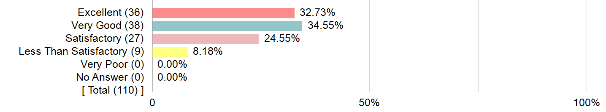
| Options | Score | Count | Percentage |
|---|---|---|---|
| Excellent | 5 | 36 | 32.73% |
| Very Good | 4 | 38 | 34.55% |
| Satisfactory | 3 | 27 | 24.55% |
| Less Than Satisfactory | 2 | 9 | 8.18% |
| Very Poor | 1 | 0 | 0.00% |
| No Answer | NRP | 0 | 0.00% |
| Statistics | Value |
|---|---|
| Invited Count | 128 |
| Response Count | 110 |
| Response Ratio | 85.94% |
| Mean | 3.92 |
| Mode | 4 |
| Sum Total | 431.00 |
| Standard Deviation | 0.95 |
10.How would you rate the instructor’s success in explaining concepts and ideas?
10. How would you rate the instructor’s success in explaining concepts and ideas?
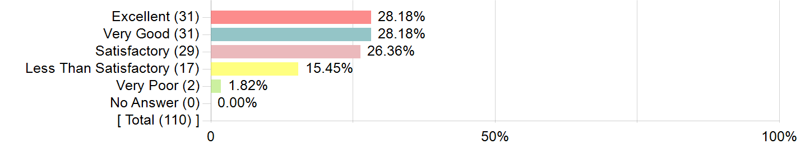
| Options | Score | Count | Percentage |
|---|---|---|---|
| Excellent | 5 | 31 | 28.18% |
| Very Good | 4 | 31 | 28.18% |
| Satisfactory | 3 | 29 | 26.36% |
| Less Than Satisfactory | 2 | 17 | 15.45% |
| Very Poor | 1 | 2 | 1.82% |
| No Answer | NRP | 0 | 0.00% |
| Statistics | Value |
|---|---|
| Invited Count | 128 |
| Response Count | 110 |
| Response Ratio | 85.94% |
| Mean | 3.65 |
| Mode | 5, 4 |
| Sum Total | 402.00 |
| Standard Deviation | 1.10 |
11. How would you rate the timeliness of the instructor’s feedback on assignments, exams, and other work?
11. How would you rate the timeliness of the instructor’s feedback on assignments, exams, and other work?
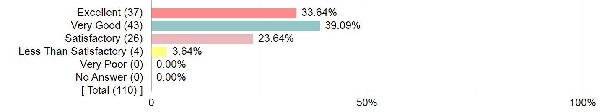
| Options | Score | Count | Percentage |
|---|---|---|---|
| Excellent | 5 | 37 | 33.64% |
| Very Good | 4 | 43 | 39.09% |
| Satisfactory | 3 | 26 | 23.64% |
| Less Than Satisfactory | 2 | 4 | 3.64% |
| Very Poor | 1 | 0 | 0.00% |
| No Answer | NRP | 0 | 0.00% |
| Statistics | Value |
|---|---|
| Invited Count | 128 |
| Response Count | 110 |
| Response Ratio | 85.94% |
| Mean | 4.03 |
| Mode | 4 |
| Sum Total | 443.00 |
| Standard Deviation | 0.85 |
12. How would you rate the usefulness of the instructor’s feedback on assignments, exams, and other work?
12. How would you rate the usefulness of the instructor’s feedback on assignments, exams, and other work?
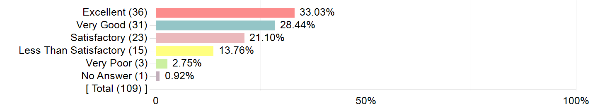
| Options | Score | Count | Percentage |
|---|---|---|---|
| Excellent | 5 | 36 | 33.03% |
| Very Good | 4 | 31 | 28.44% |
| Satisfactory | 3 | 23 | 21.10% |
| Less Than Satisfactory | 2 | 15 | 13.76% |
| Very Poor | 1 | 3 | 2.75% |
| No Answer | NRP | 1 | 0.92% |
| Statistics | Value |
|---|---|
| Invited Count | 128 |
| Response Count | 109 |
| Response Ratio | 85.16% |
| Mean | 3.76 |
| Mode | 5 |
| Sum Total | 406.00 |
| Standard Deviation | 1.14 |
13. How would you rate the instructor’s success in creating and maintaining an inclusive class, respectful of all students?
13. How would you rate the instructor’s success in creating and maintaining an inclusive class, respectful of all students?
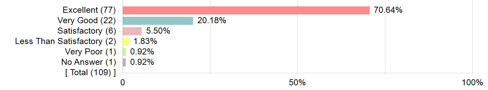
| Options | Score | Count | Percentage |
|---|---|---|---|
| Excellent | 5 | 77 | 70.64% |
| Very Good | 4 | 22 | 20.18% |
| Satisfactory | 3 | 6 | 5.50% |
| Less Than Satisfactory | 2 | 2 | 1.83% |
| Very Poor | 1 | 1 | 0.92% |
| No Answer | NRP | 1 | 0.92% |
| Statistics | Value |
|---|---|
| Invited Count | 128 |
| Response Count | 109 |
| Response Ratio | 85.16% |
| Mean | 4.59 |
| Mode | 5 |
| Sum Total | 496.00 |
| Standard Deviation | 0.76 |
14. How would you rate the instructor’s communication with you outside of class?
14. How would you rate the instructor’s communication with you outside of class?
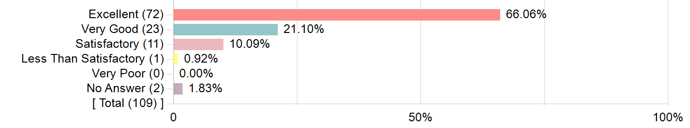
| Options | Score | Count | Percentage |
|---|---|---|---|
| Excellent | 5 | 72 | 66.06% |
| Very Good | 4 | 23 | 21.10% |
| Satisfactory | 3 | 11 | 10.09% |
| Less Than Satisfactory | 2 | 1 | 0.92% |
| Very Poor | 1 | 0 | 0.00% |
| No Answer | NRP | 2 | 1.83% |
| Statistics | Value |
|---|---|
| Invited Count | 128 |
| Response Count | 109 |
| Response Ratio | 85.16% |
| Mean | 4.55 |
| Mode | 5 |
| Sum Total | 487.00 |
| Standard Deviation | 0.72 |
15. Based on your answers above, and any other factors you consider important, please provide an overall evaluation of the instructor.
15.
Based on your answers above, and any other factors you consider
important, please provide an overall evaluation of the instructor.
| Options | Score | Count | Percentage |
|---|---|---|---|
| Excellent | 5 | 41 | 37.61% |
| Very Good | 4 | 37 | 33.94% |
| Satisfactory | 3 | 25 | 22.94% |
| Less Than Satisfactory | 2 | 6 | 5.50% |
| Very Poor | 1 | 0 | 0.00% |
| Statistics | Value |
|---|---|
| Invited Count | 128 |
| Response Count | 109 |
| Response Ratio | 85.16% |
| Mean | 4.04 |
| Mode | 5 |
| Sum Total | 440.00 |
| Standard Deviation | 0.91 |
16. Please provide any additional comments regarding the instructor.
| Comments |
|---|
| I started off hating the style of this course and thought the objective to embrace your confusion and seek confusion was not great, but I've come to appreciate it more. |
| Professor Hammer is one of the best teachers I have has at Tufts. He does a great job at creating an environment that is rooted in learning rather than getting correct answers |
| Super nice professor who seems to genuinely care about each of his students. I would consider maybe having a few more lecture like classes compared to always answering the questions out of the box, but he did a great job to create a friendly environment where students could answer questions in front of the rest of the class. |
| I think Prof Hammer is a very thoughtful and great professor. You can tell he loves what he's talking about and is passionate about getting students to learn,;however, I did not like the structure of the course and it actually made learning even harder for me. |
| Professor Hammer is an excellent professor. He challenges the systems of teaching, learning, and education that are put in place today. He emphasizes the students' learning for the sake of understanding and making sense of the material rather than for grades. Physics is a challenging course. and I think that he does an amazing job at teaching it. I think that Professor Hammer's course is extremely valuable because it teaches students that they are not going to get perfect scores or flawless answers all the time. If they are to be scientists, they will probably be wrong more times than they are right. I am really grateful to have taken Professor Hammer's course. |
| N/A |
| Great person just have my differences with the organization of the course as I've reflected above. |
| Although Professor Hammer's philosophy about teaching and learning was very different from what I was used to and hard to adjust to, I do see the validity in it. He encouraged us to be comfortable with being confused which is definitely an important skill and I appreciate his emphasis on the process of learning. |
| I think David is a nice professor but in his attempts to be nice, he sometimes make students feel dumb. He advocates for sitting with confusion, even on tests, but the criteria for confusion and what is good confusion are iffy. Why should some people get points for confusion while others don't? I think he should also implement communicating more via announcements as many students have Piazza for many classes and working to find instructor notes takes more time than actually thinking of the content. Additionally, if he knows the pre–lecture videos aren't working, change them. Please. He also withholds certain information? He doesn't tell right answers and he's aware people are ticked off by this but he wants you to work towards the answer and while I understand, it takes away from the course. There is not even the opportunity to use the answer to back petal and make sure your approach is correct. Additionally, if you are doing the problem wrong but don't recognize that, what is the point. Answers for tests and problem sets are unclear and the wording of questions is also unclear at points. |
| David is welcoming and inclusive, I love he encourages to be confident about confusion. He is a very nice person, no doubt. However, this format does not really work with exams, if he really cared about learning only then maybe we should not have those exams, there can be other ways to test our understanding or to make them test our abilities better. I was confused with his teaching philosophy about being okay with confusion and improvement is important but then also giving us exams where most of us were not getting high marks which indicate level of understanding. I like he is lenient with exam grading and gives lots of points, but they were not really fair assessments in my opinion. Grading criteria is so unclear too. I love to learn but at the end of the day I am a student and grades are important to me too, I wish the class were more structured. But again, David is a great instructor and I really appreciate him, I just wish the course was structured better. |
| Felt intimidated by in–lecture participation by the class size, but it felt as if I wasn't "learning physics properly" because so much emphasis was placed on speaking in class, whereas I'd prefer to take notes there and volunteer thoughts more in recitation. |
| The only thing is I am not a fan of flipped classrooms. |
| I really appreciated that the instructor took the time and effort to learn our names. I also felt that he cared deeply about the learning of his students. |
| Prof. Hammer is great. He is very caring and wants everyone to do well in his class and makes sure he gets to know everyone in a 130 person lecture. |
| Thank you for instructing us this semester :) |
| When David explained concepts in class, he did a great job! However, I wish he engaged us more in material similar to the difficulty of examinations rather than the baseline questions asked on the achieve. I think there was a huge discrepancy between the types of questions we went over in class and the types of questions on exams. |
| I like the open–endedness and I like the philosophy. Even though you repeat it a lot, and it almost feels like nagging at times, nagging works so keep doing it. |
| Engaging, caring, passionate, fun! |
| Very fun and engaging. I appreciate the effort to get to know as many students as possible and actually responding to our responses on Achieve ––– shows that he really cares about his students & their learning experiences. |
| None, good and passionate professor. |
| He really seems like a great guy, but I really dislike his teaching methodology. I do not feel like I understand physics better. |
| I emailed him about random physics problems and his responses were really enthusiastic and that was really great to have from a professor of such a large class – giving his free time to hear me out on unrelated topics when he really didn't have to. |
| Initially I was annoyed at his style of teaching, but I'll admit that it does ultimately end up working. |
| I understand that he has a very specific teaching style and philosophy but it is too hard to make the TAs and LAs attempt to copy it. They do not know how to help in that way. Also get rid of flip classroom and actually teach during lecture. He is excellent at his way of teaching but he only ever teaches this way during office hours or one on one. If he taught this way during the actual lecture and did not just ask us questions maybe I would have understood more during this class. |
| He really pushes us to engage in the learning structure that he wants us to follow and is convinced that I will do well if I truly engage in that learning. |
| Just an amazing teacher. He is very interested in the material and the success of his students. He really cares about getting the students to learn the material. |
| You can tell David really cares a lot about his students, he takes the time to learn all their names and that does make a difference. He is accessible during office hours, quick to answer emails, and loves getting questions, no matter how "off–topic" or far–fetched. |
| Professor Hammer was incredibly engaged and made it hard not to be genuinely interested in physics. I was not expecting to enjoy this class but I found myself looking forward to it every week. |
| None. |
| Professor Hammer was engaging – he did many in–person demonstrations to help us conceptualize the physics that we were doing. on paper. However, for all that he emphasized learning I found it rather counterintuitive that in the MCQ sections on exams we did not get a chance to explain our reasoning and that the grading of exams was so skewed. In theory, Professor Hammer's teaching goals were great – but he did not provide us with the tools necessary to meet them; for instance, most of my time on problem sets was spent not knowing how to start – which he never addressed. |
| David is clearly very enthusiastic about getting us to learn and understand physics but the way the class was structured did not work well for me. I usually understood his explanations when he gave a concrete right/wrong answer but when he left us to wrestle with an idea I would get frustrated. For me, I need to see an answer to understand how that is correct and why I am wrong so I felt like I needed more explanations about things. |
| The instructor wanted us to figure out concepts for ourselves, but I think he took this idea a little too far. It created the impression that we were supposed to figure out the concepts on our own, instead of asking the instructor for help. This emphasis on "grappling" or "doing physics" also distorted what the goal of the problem sets and exams were. It seemed like the goal of the problem sets was just to write down as much information as possible; write down every though that enters my head as I'm thinking about the problem, instead of focusing on how to actually do the problem. |
| David as a person is amazing and he really connects with his students and does a lot to help us out throughout the semester. I found the course to be overly difficult and kind of contradictory with the emphasis on grades, but I am glad to have had David as a professor. He's a great person and super funny but it'd make a lot of people's lives so much easier if the course was ungraded in line with Professor Gallagher's and Miguel's phys 11 courses. |
| David is very helpful, and I think he teaches the class very well. I wish we talked less about the grade stuff though, because his saying that people get bad grades and his class but learn from it does not take away from the extreme anxiety students have about their GPA. We are worried because we need to get into masters programs to get the jobs we want, so we need a good GPA, and that anxiety is reasonable because this is why we are in college and everything is so competitive. |
| it’s a little frustrating when some questions are left unanswered |
| I really like Professor Hammer as a person, he's super sweet and considerate but his instruction style was not the most compatible with my personal learning style so I struggled a bit with this class. However, I by no means believe that he is a poor instructor, it's just the way that I learn was not best supported in this course. |
| I really like the professors "new" way of teaching and I think it engages students more than just sitting and teaching and lecturing. |
| I think this professor has a lot of care for the wellbeing of his students and wants us to learn. Professor Hammer challenges us because he knows it will help us in our future education/job. I appreciate his learning style because of this. |
| He is an amazing teacher and made a class that I was dreading, probably my favorite class of the smester. |
| I think that prof. Hammer was a good physics teacher and gave relevant advice that I could apply beyond the class. He met with me multiple times and reached out to me, which I really appreciated. Overall, I really enjoyed the class, in large part due to prof. Hammer's manner of teaching. |
| David was very effective and engaging inside and outside of lecture. I liked that he sent individual Emails in response to answers on the Bridge questions. |
| My TA Miguel is lovely :) |
| I loved taking class with Professor Hammer (definitely my favorite professor out of all my classes this semester)! I really, really enjoyed learning physics this semester, and that's thanks to him. I took physics in high school but it was my least favorite subject because I just didn't understand the concepts and struggled a lot. But, this semester, I learned to embrace that struggle and I came out liking physics a lot. Professor Hammer is also super understanding and encouraging with students, and it's impressive how he takes the time to get to know every single one of his students, even though there's over 100 of us. I felt so comfortable with being wrong in his class, and I think it's all props to him that I had such a great learning environment. |
| I loved having Hammer! He definitely has it rough teaching physics in itself against so many students who dread physics or did not have a great experience learning it in the past but he did a good job in changing people's view of physics as a whole specfically in mechanics. |
| You've been a really good professor, one of the best I've had, and I really appreciate all of the amazing work and encouragement you've done and given to us as students. I have and am struggling a lot in this course but it has taught me a great deal, especially on how to become comfortable with not knowing the answer to a question, and it's okay to be frustrated when I don't understand something that is more intuitive to others. |
| I really felt like the whole class was up in the air. I rather have things like solidified practice problems and actual lecturing of concepts during the classroom. I did find the online teaching helpful at all. |
| David was a very compassionate instructor. he was accommodating to different ways of thinking and welcomes wrong answers and confusion which was very encouraging for me as a student whom physics is not very intuitive. |
| Thank you, David! He is always passionate and patient. He would spend a lot of time after class to improve his teaching. I can feel that he truly loves his job, and wants the best out of his students. I am very thankful of all the office hours he held, the emails he sent out for achieve feedback, and the meetings that helped reflect on the exams. |
| There were multiple times during the semester when I felt like Professor Hammer wanted us to not do well in the class. He clearly is a nice person, but I feel like his belief in us teaching ourselves means that he doesn't actually help my learning. I fully understand his idea that we need to make sense of topics ourselves, but it is hard to make sense of things when you are not sure what is actually correct. I really like physics, but this class felt like a chore, and really made me dislike physics. I went into this class debating being a physics major and I don't think I enjoy doing physics anymore because this class was such a bad experience for me. To be clear that wasn't really Professor Hammer's fault, but I feel like he could have been a lot more supportive, and could have actually taught us more. |
| Amazing instructor! Very caring! |
| I <3 Professor Hammer. He's great and explains things so well. Even if I do not end up receiving the grade that I'd like in the class, I am confident that I will have a refined perspective on physics and how the world works because of this course. |
| I sometimes just want to know if I am wrong or right, and if you never let me know when my thinking is wrong how do you expect me to do well on a test if I think I am right the whole time? Also the feedback on problem sets honestly suck...when you just tell me to revisit something how am I supposed to know what I did wrong or what part of my reasoning is wrong? |
| David is a great, receptive professor who is open and kind towards all students in the class. |
| I know my answers to the ratings might make it seem like David was not that great of an instructor, but I don't think those capture what David is trying to do and why it is working. There were definitely times when I was frustrated. It didn't feel like I was learning anything from the achieve prelectures, and coming to class just left me more confused because it felt like the explanation was just not working for me, but I think that is the whole point. I have so much respect for David and what he is trying (and being successful) to do. I've always felt frustrated by the longing to understand why things are happening in classes. David starts with that, and builds our understanding from there. I want this to work for me so badly, and in many ways it does, but I think something about the structure of this class is a little bit off and hindered me from actually enjoying it fully. I believe a lot of that is simply trying to work within the confines of a system that is built for a different way of teaching, and me being so accustomed to that old way of learning that this feels frustrating even though it's more fulfilling. Even as someone with no interest in pursuing physics as a part of my career, I think that David helped me feel like what I was learning was meaningful and had significance beyond being a prerequisite, and I have a lot of respect for him. |
| I really liked David. I love how passionate he is about physics and trying to instill his philosophy of sense–making/ten year old thinking onto his students. He really made an effort to get to know each student and I really liked how he wants to connect with us. I think that he did a great job of helping me to make some more sense of physics and that the course has helped me improve my understanding of the subject. |
| I just wanted to say thank you for a great semester!! |
| Professor Hammer is a great person, he has super engaging lectures but I often find my self lost... sometimes he never fully explains things and leaves the final answer up in the air as a way for us "to think harder" I understand where he's coming from but If I don't know the answer to something in class and no one else does either how am I supposed to get that correct when he asks the same question on test later on. |
17. How would you rate the space in which instruction occurred (classrooms, laboratories, etc.)?
17. How would you rate the space in which instruction occurred (classrooms, laboratories, etc.)?
| Options | Score | Count | Percentage |
|---|---|---|---|
| Excellent | 5 | 52 | 48.15% |
| Very Good | 4 | 39 | 36.11% |
| Satisfactory | 3 | 16 | 14.81% |
| Less Than Satisfactory | 2 | 0 | 0.00% |
| Very Poor | 1 | 1 | 0.93% |
| Statistics | Value |
|---|---|
| Invited Count | 128 |
| Response Count | 108 |
| Response Ratio | 84.38% |
| Mean | 4.31 |
| Mode | 5 |
| Sum Total | 465.00 |
| Standard Deviation | 0.79 |
Please tell me something about what you watched or read in preparation. Did you find the Achieve prelectures helpful? Did you use any of the textbooks I recommended? Something else? Thanks!
| Comments |
|---|
| Achieve was generally mildly helpful. The math was confusing and fast most of the time, and that math was never reinforced in class so it was difficult to understand it fully. But overall the achieve was helpful in getting the ball rolling in thinking about some of these concepts. |
| I found prefectures helpful at giving some prior knowledge before things clicked during lecture. I did not use a textbook. |
| achieve pre–lectures were helpful a minority of the time and I think another program to introduce concepts and formulas would be much more helpful. THe pre–lectures felt like they would just walk you through derivations and equations which weren't very helpful for me. |
| I think the Achieve prefectures were ok at explaining concepts. They really overcomplicate things though and often breeze through the math behind derivations without explaining them at all. I would prefer if the videos were longer but explained concepts better. I did not use any textbooks for this class. |
| I did not like the achieve prelectures that much. |
| I did not find the Achieve videos very helpful, but the bridge was kind of helpful because it helped me think about how to approach and reason with physics problems. |
| Honestly, I think Archive, yes, was helpful but I think, there can be a better way, and making it 8 am also wasn't favorable. |
| The achieve pre–lecture wasn't very helpful, and it instead made things more confusing. |
| i think the achieve was somewhat helpful |
| I did not find the Achieve videos helpful. I often went on Youtube to search for other resources and explanations because they went over the concepts at a slower pace and with greater precision. I am okay with spending more time watching a video if I can understand a concept better. However, other than Youtube videos, I did not know of any other resources that I could've used to prepare myself for lecture. |
| The achieve lectures were honestly not helpful at all. They often explained things differently from what we learned in class, making it really hard to consolidate those two ways of thinking. We are told not to rely on mathematical explanations all the time, yet Achieve almost always uses math to explain their reasoning (and only sometimes making real–world connections). I used outside youtube videos and resources to facilitate my thinking, instead. I also can't afford textbooks, so I was not able to use that as a resource (since there weren't an official class textbook, I didn't know how to get any aid to buy them through the school). :( |
| I didn't really use the textbooks recommended, but found that the Achieve prelectures were extremely helpful! |
| The concept of a pre–lecture supplied the lectures with too much freedom to wander off into conversations rather than instruction. I'd rather stare at chalkboard writing and take real notes than watch a video to be introduced to the content. |
| I often found the Achieve lectures difficult to follow, though I did learn a little bit from them. What helped was having lectures supplement them and going over the bridge questions in class, so that any confusions could be worked out. |
| I did not find pre lectures helpful. Achieve guy throws equations at you without explaining why and leaving out important information. The questions David puts on achieve don't even relate to pre lectures sometimes. I mostly relied on youtube for explanations and examples. |
| Achieve was not enough to understand concepts, I wish we did lectures on some of them rather than spending all of class on questions. If you had no prior physics knowledge, you're guaranteed to do less well in this course from I what seen. I did a lot of my own googling and videos to learn, the class materials were not enough to do good and spent much more time in the class than what is expected for this reason. |
| The Achieve prelectures were more helpful than trying to read out of a textbook might've been, but I also had to use other video sources for my understanding. |
| Some of the Achieve prelectures I found helpful but others felt me more confused. |
| I think the Achieve was helpful but not on its own, I sometimes wish more things were explained during lectures or especially in recitations. |
| I think the bridge questions were helpful, and it was nice to grapple with them and have the ability to explain why I thought something. Having that written down and saved to go back to was really great. I. think the Achieve lectures were sometimes helpful: their derivations of equation were for sure confusing sometimes. The achieve lectures I feel like would be great reinforcers but I needed to know more before watching them. I used other videos on the internet to compensate. Even though there was a focus on understanding the material, for exams it is also important to be tuaght how to approach questions. |
| Personally I did not find the achieve lectures as helpful as I would have if I was just being lectured in a real–life classroom environment. |
| I think that they were not the most helpful as the content got harder in the course because they would make jumps in the prelectures that I wouldn't follow and then I would be confused and there would be no way to find out what happened until class and then I might not get a straighforward answer and so I was left very confused sometimes. |
| The prelectures were OK. I feel like some of the explanation were just kind of complicated and didn't really help with understanding new concepts. It was good for the start of an understanding but fully grasping a concept just wasn't really possible. |
| Mostly pre–lectures + occasional self–teaching with online information to find alternative explanations to concepts provided in pre–lectures. Mostly used YouTube to find alternative lectures and videos on certain topics when I needed other explanations. |
| The achieve prelectures can be good, but they can sometimes be overcomplicated and full of jargon that can make it hard to digest the information being taught. I did not use the textbooks but that's because I forgot about them unfortunately, maybe I should have. |
| I think Achieve videos are not that good, but again better than nothing. In the flipped classroom format I feel like I do better when instructors record videos in which they go over slides, concepts, formulas, definitions, examples and practice problems, instead of 3 minute long achieve videos that I find hard. Additionally, I used openstax textbook and I checked out a Mechanics book from the library. |
| I was not a huge fan of the Achieve prelecture videos because I did not appreciate how they emphasized the derivations for the equations. These derivations were often confusing and overwhelming. I would have preferred videos more in alignment with everyday thinking! |
| The Achieve prelectures were surprisingly difficult to follow, I think it's because while solving the equation, the previous equation disappears so it's difficult to keep track of why things are the way they are. Almost like not showing work in math. |
| The Achieve prelectures were helpful |
| Most of my learning came from the Achieve prelectures, which I built upon later in lectures. |
| Sometimes the videos would be too math–heavy which would be confusing, especially if they had topics like the dot product which I had not covered yet. I feel like they were more equation–based than conceptual–based, which was very different from how concepts were talked about in class. But I would take a video over a textbook reading any day, since some of their explanations did make sense. |
| The achieve was often more confusing than helpful and contradicted the approach of learning without numbers |
| I watched the prelecture videos in preparation. I believe something that might help is explaining directly what the topics or concepts mean during lecture because sometimes the things are left for interpretation or the many answers of students that sometimes are not said to be right ot wrong confuses me on what the answer actually is. |
| I found the Achieve videos to be somewhere between helpful and unhelpful. Sometimes, they were a little hard to understand and felt like they were just spewing information at my (in contrast to the sense making that we did in class). However, I think they were helpful so that we could spend class time on actual questions. |
| Did not use textbooks, Archive were useful, mostly the bridge questions |
| I really did not like the achieve lectures, I found that they made topics I already understood more confusing. |
| The Achieve prelectures were helpful to an extent – I usually took notes as I watched them, which I could refer back to when doing the problem sets. However, sometimes the videos were confusing or not super clear. I would look up other videos and learning materials online as needed. |
| I didn't really engage in the videos because I took physics in high school so I already knew most of it |
| I really did not find the Achieve prelectures helpful. I think the material is introduced in a way that is not easy to learn, and after the prelectures my notes would consist of bits and pieces of the many derivations. Which would confuse me further. But the bridge questions were a little better because they encouraged me to think through some problems. |
| Achieve lectures were helpful in a sense that it introduced concepts and explained ideas, however at times I felt that the videos contained TOO much information. There was a slight disconnect between the videos and our actual lectures in that all the achieve videos talked about were equations and derivations while in class we seldom ever used complicated equations. So I felt, at times, overwhelmed by how much math and information was squeezed into these 2 minute videos and also more confused that I needed to be. |
| The achieve lectures simply derived equations. Maybe they were helpful for people with a different learning style but they did not help me in the slightest. Most of the time I ended up searching the topics on YouTube for hopes of someone actually explaining it to me. |
| I didn't really find the achieve prelectures helpful because they went way deeper into all of the concepts than what we covered in the class. It made me and other students stress the day before class for no reason. |
| They were helpful sometimes, but for the most part the videos were mostly deriving the equations which can be helpful in connecting concepts like forces to momentum, torque, angular momentum, etc but sometimes the derivations just seemed really complicated and long. Also sometimes the video would just skip over steps and transition to next steps which was a little difficult to follow sometimes. |
| I watched some videos on YouTube. The achieve lectures weren't too bad. I learned the most during lectures. |
| I watched all the Achieves, and they were a helpful introduction to the concepts, but then I felt a disconnect between the math heavy/equation focused approach to the videos vs the concept based and ambiguous approach in lectures. Besides that, I did not access any other resources. |
| I liked the achieve lectures and I also relied heavily on the end of chapter summaries provided in the e–textbook that came with achieve. These summed up the math, equations, and how to approach problems which helped me to link all of the conceptual stuff from class and recitation to actually solving problems. |
| I watched the achieve videos and did the problems. I also used the practice exam problems. |
| I watched the Chemistry Tutor's videos on Youtube, as well as Spahn's Science Lectures, College Physics I (which the professor had posted on Piazza). I did not find the Achieve prelectures helpful at all – they focused so much on mathematics, which made it hard to reconcile their content vs. the understanding–based learning that was emphasized during lecture. |
| The bridge questions got me thinking but the achieves were hard to follow. It only rushed through specific practice problems that didn't show the actual concepts. |
| I didn't use a textbook, but I found the achieve pre–lectures very helpful |
| The achieve prelectures were helpful but it got kind of confusing when it felt like we were picking and choosing certain parts of them to use in the course while others were ignored or we were told they were misleading. We would do problems in the achieve that never showed up again so it felt like the achieve was trying to teach us using one style of teaching while David was teaching another and they felt conflicting in that sense. I rarely if ever felt like I knew what I was supposed to or I was prepared enough for anything in the class. |
| I thought the Achieve lectures were very helpful. Office hours were also a good way to work through confusion. |
| the achieve prelectures were helpful, but the explanations were confusing at times and it was very much plug–in equations based |
| I sometimes found the Achieve prelectures helpful. Sometimes when the videos were very equation heavy, I found that it did not help me in class and with the homeworks that were asking conceptual questions. But when I wanted to plug in equations and numbers, then I found the videos helpful. |
| I used YouTube videos on the topic |
| I felt that the achieve was very helpful for me. I did not use any textbooks. |
| I thought the Achieve prelectures were not very helpful so I had to watch Youtube videos to understand some of the concepts. |
| The achieve was not really that helpful. it ran through examples quickly and uses different equations from what we were shown during lecture. |
| I used the achieves a lot and then what I found helpful was writing out what I knew about the topic and then figuring out what I didn't know, and I needed help with. |
| i know this is my fault and i need to work on improving it but my focus span is quite short. sitting and watching these pre lectures is not very effective for me. i mean i did learn from these videos but i think it not as efficient as lectures in person. |
| I always watched the Achieve videos before lecture. I found them somewhat helpful. I think that they give a pretty general basis of knowledge for the topic. I think they do a lot of derivations on the concepts which sometimes can be helpful but most of the derivations didn't seem like we needed it for the class. I think it would be really great if the videos could include one real world example of the concept and ask many questions about it. (ex: throwing a ball up in the air: how long will it take to reach the bottom, how high does it go, how fast is it moving right before reaching the ground. |
| I found the Achieve prelectures to be pretty helpful to get a bit of an understanding of the topic before class. |
| I think the Achieve prelectures were very helpful – I appreciate that they provide the derivation for the formulas that they spit out, and then also follow that up with an application of the formula that was just derived. Sometimes, even though I don't understand the derivation, the application/example problem is super helpful! |
| Unfortunately, I found the Achieve lectures more confusing than helpful. After the first exam, I studied each lecture again and took notes on every word and example; however, while I think the lectures are extremely informative, they are sometimes too informative and overcomplicate certain ideas. For some topics later in the course, I went to youtube which simplified the concepts into example problems, which made more sense for me overall. |
| I found the Achieve prelectures helpful. |
| Achieve was more confusing than helpful |
| I watched the Achieve prelectures did the bridge questions. I generally found these helpful, but sometimes the videos were very focused on the math, and class was very not focused on the math, so it was difficult to connect. |
| Achieve sucks and is an absolute waste of money consider how expensive this school is already. There are NUMEROUS free and better lectures out there |
| I think the Achieve prelectures were very helpful in the beginning; I sort of found them less helpful (even though they were still useful) towards the end of the course. I watched all the lectures before class, but I overall feel that although Achieve did a great job in general providing examples to show concepts, they also encourage using equations. This isn't necessarily to say that equations are a bad thing, but I felt like I could answer all of the Achieve questions (not all of the bridge ones, but the ones with the videos) with just equations and not necessarily thinking through the physics. I didn't use any of the textbooks, but I did check Piazza and watch the demos posted there. I also watched a couple of videos on my own time from various sources, but this was pretty rare (I think it was basically Organic Chemistry Tutor, and maybe Khan Academy, but I can't remember). |
| I did not really find the Achieve prelectures helpful in terms of aligning it with how we approach it in class. It helped when trying to understand that if you change one thing, how would it affect the motion overall but there was still more to it. I did not refer to the textbooks. |
| I think achieve prelectures are useful in introducing the concepts but I think offering more examples would also be helpful. Yes you've done this through the i–clicker questions, but I think posting "answer keys" to those problems post lecture would also be helpful. |
| The Achieve prefectures were definitely useful, but sometimes they delved too deep into the math, and it became confusing to follow. |
| I did not find the Achieve prelectures helpful at all. I used a textbook that I used for the course last year which was just the same college–level curriculum of physics however my results in this class were worse even though I don't think my understanding was any worse or better. |
| The examples in Achieve were very helpful. I found following along with those examples helped a lot with figuring out the problem set questions. |
| I did not find the achieve prelectures helpful and had to watch videos on youtube and the textbook. I found that reading understanding physics by karen cummings (you recommended) helped a lot. |
| I think the achieve prelectures provide a basic view of what we are learning, and explain things directly and mathematically. It helps, but I learn more in lectures and discussion hours. I didn't use any other textbooks. |
| I thought the achieve lectures were helpful as they gave me concrete information that was not always provided in class. As someone who did not have a previously good understand of physics before this class, that was something I needed. |
| Achieve was not remotely helpful. I didn't even know there were recommended textbooks, I just googled things. I learned more from my old physics notes from highschool and youtube then from this class. |
| Some of the Achieve prelectures were helpful, but it was difficult to be engaged watching a video. |
| I found the Achieve prefectures very helpful and found the lecture notes very helpful! |
| I pretty much only used the achieve lectures, and when I was really confused looked online at different sources such as Khan academy. The achieve lectures were generally pretty helpful, but it would've been nice to also learn these concepts in lecture itself. |
| I didn't love the Achieve pre–lecture videos. I think that if you lectured or posted videos of yourself, I would understand concepts better (or at least faster). |
| I thought that Achieve was helpful but not enough. Sometimes it was too fast and brushed over things in a confusing manner and did not perfectly explain things and I wish we dealt with it more during class time. |
| I HATED the achieve pre–lectures. I just need slides with the formulas and a few example problems and I am set. I didn't realize you recommended textbooks, but I often just looked up youtube videos. |
| I did not touch the textbooks at all. The Achieve prelectures were mixed, but I found most of them very helpful. Sometimes, the explanations made mathematical logic jumps that I didn't quite follow, but I found the visual representations and explanations very helpful. |
| I don't actually learn the pre;ectures, but weirdly it kind of works. I feel like it would almost be better to make the achieve videos like post–lectures since they teach you the math without really explaining why. If we learned why first in class, and I could apply that to the videos while watching them, I think I might feel like I'm getting more value out of them while watching them, because right now I feel like the value of the videos doesn't actually come until after I come to class, and then things start to fall into place. It might save students a lot of time and frustration to have them later. |
| I always watched the achieves and they were helpful. I never fully understood them though and found that the lectures really enforced what I watched. If I needed any outside sources I referenced my notes from highschool. |
| The Achieve prelectures were helpful as an introduction to what would be discussed in class, but I didn’t find them super useful in terms of learning concrete things about the material, as they were often a little confusing. Class discussions were where most of my learning occurred. |
| I found achieve to be full of lots of information but with very little explanations. I was spewed facts and equations every night but I wasn't supposed to use the equations in class and rather think about it like a ten year old. The process made no sense. |
If you haven't already spoken to it, I'd be interested to hear whether, and if appropriate how, you changed your approach to learning over the semester. Thanks for any thoughts.
| Comments |
|---|
| Right before the first exam I realized that I was too focused on the equations and not the actual thought process of Physics. I then was able to change my thinking and it really helped me succeed in the last two thirds of the class. For example I was getting 70's on the first few problem sets and after I changed my thinking I was getting 100's or only one point off. |
| I think I grew more comfortable with not knowing or being confused. |
| I learned to question my instincts when approaching problems. What may seem so simple on paper can usually have other aspects that can change the outcome drastically. I have learned to consider all of these things. |
| i tackle problems a little differently, considering more than just math |
| One way that I changed my approach to learning is that I became more comfortable with my confusion. It became easier and easier for me to sit with difficult problems and really try to explain what I was confused on. I am still working on this, but I am becoming more comfortable with not getting the right answer. Furthermore, I became a better problem–solver because I began to look at problems from multiple different perspectives. I learned to use my everyday thinking to solve difficult problems. Over the semester, my views on learning changed as well. Learning is not being able to use an equation or formula to solve a repetitive, similarly structured problem. Learning is being able to make sense of the material and then apply to more complex problems or even simple everyday tasks. It is the ability to take in information, make sense of it, and explain it in a way that makes sense to others in simpler terms. |
| I think my thought process has stayed the same throughout. I already came into the course with the intention to learn and improve my thinking, and only came out of it with that hope solidified. However, I do want to bring up the fact that at the end of the day, this is a college class. We are all taking it for a grade and there is no way that we can ever change or forget that fact. So no matter how hard we try, there will always be that pressure to get the question "right", especially since a lot of us want to go into med or grad school. |
| I definitely feel a little more comfortable with not knowing in my STEM classes now |
| I think I moved away from simply learning how to plug numbers into formulas without thinking about what they mean in the context of the problem and how the answer connects to the physics happening. i definitely do still rely on math and formulas but I try to go back and understand the meaning of them, checking that they make sense with everyday thinking. |
| I did, I started spending more time on reviewing problem sets and achieve lectures, changing past problems, and it helped only slightly when it came to exams, I would spend countless hours preparing for exams in the ways recommended but still was not doing as well as expected, felt impossible no matter how much and what I studied. |
| In the beginning, I struggled to keep up with the content being shared during the pre–lecture videos and lectures but later in the semester, I learned to break up the content into sections for me to review on my own. |
| I don't really think I have. |
| I've always been someone who pretty much just gets things the first time through. This course taught me that when that doesn't happen, it is okay, but one way to help with that is to write down a complete thought about what exactly is confusing you! Also, this course taught me to not just be happy when one method works, but to look for multiple methods and see if they work and if they don't, ask why. |
| More of an emphasis on asking quesitons. |
| I think it changed me in being confident. I would never have expressed confusion the way I have in the past few classes publicly to an entire lecture hall, but you were very encouraging about expressing confusion and so I was able to go outside of my comfort zone. |
| More problems if possible. I like the learning style but more practice problems that give concepts in different situations would help. |
| My approach to learning has changed in that I have learned that being confused can sometimes be a good thing, as it can be an opportunity for learning and growth. I have also learned that it can be beneficial to think harder about problems and try to find multiple ways to solve them and to see if the different avenues agree and, if not, identify why that is and where the flaw in your thinking came from. |
| During this semester, I started with a traditional approach to learning, focusing on passive reading and memorisation. However, I quickly realised that the complexity of the material required a more engaged strategy. I shifted to active learning techniques, such as self–quizzing and teaching concepts back to myself, to deepen my understanding. I also began to space out my study sessions more deliberately to enhance retention. |
| I think over the semester I started to emphasize more what we discussed in lecture rather than what the Achieve videos went over. The achieve videos were more based on mathematics and equation derivations, which is ultimately not what the course is about. |
| I feel like my engagement with the material definitely increased as the semester went on just because the concepts became more complicated and were more fun to think through than kinetics. |
| I have changed my approach to seek understanding over memorization. I now trust my own mind and experiences to work through problems. Further, I do not rule out incorrect thinking, because there is some sense to it, rather I make connections with other concepts to reconcile these contradictions. I learned that I have to repeat this process a lot until it sticks, but it enables me to pinpoint the concepts I need to work on. Most importantly, I am more comfortable with being confused and engaging with that confusion. |
| Before this class, I had taken physics in high school and my teacher primarily focused on explaining things in terms of math and formulas as well as dimensional analysis, so I was already hardwired to that approach coming into this class. However, over the class I began to spend more time thinking about the physical concepts behind everything we learned and piecing together how the results determined through math fit in to how things actually operate in the world. |
| I know I will probably not get an A in this course but I have come into acceptance, because this class was hard in that it pushed me to actually think about why the concepts worked rather than just memorizing them and taking them as fact. I did enjoy class discussions and some of the confusion that came along with it and it was very interesting to see how explanations could be reconciled with, even if they were wrong. There was a thrill in the learning process, which was very different than my AP physics experience which essentially taught us how to take the test (which itself was very math based) rather than our learning. So I liked the learning aspect of this course, but I wish less weight of the grade was determined by the test. Maybe they should just serve as checkpoints, kinda like the problemsets, or be take–home, since that gets rid of the time–induced stress and instead allows for us to think more clearly. |
| I do physics by thinking in an everyday context but it doesn’t always work and I wish there were numbers for those situations for it to make sense. |
| I changed my approach of my studying this semester from: doing a lot of problems then revising the answers and finally changing my own mistakes and trying to resolve the problems in different methods. |
| Having taken physics before, I had been very equations driven in the beginning of the semester. After getting a low score on my first p–set, I saw that using equations wouldn't cut it, and I needed to fully explain my work and sense make. In class, we have to listen to other people lines of reasoning, and figure out which is right. We had to get comfortable with thinking through wrong answers, and focused on the process of getting the answer and why, rather than just plugging into equations. I have found this to be very helpful, and even find myself explaining my thinking on my calc assignments subconsciously. |
| I don't think I changed it that much, but I placed a bit less emphasis on the problem sets and more on past exams and lectures. |
| I've never really had a class that approached learning like this before, so it was a very new (and kind of overwhelming/scary) experience for me. It really challenged me to accept that confusion is part of the learning process – my problem sets included related questions, confusion, and sometimes didn't even reach a single answer for a given question. I'm also not used to thinking of several approaches to solving the same question, so trying to figure out / discuss multiple perspectives and then reconcile any differences between them was not something I had a lot of experience doing. |
| I think the biggest point I learned was to engage with what confused me. Even trying to understand what exactly that confused me was sometimes the hardest part. A lot of times I claim "I'm confused" as an endpoint, a giving up on the problem. But this course helped me see that being confused and then putting in work to get less confused is what learning can be. |
| I think what I learned is to just embrace confusion and write it out because honestly speaking, the times where I figured out answers the best was when I thought about why I was confused and actually wrote stuff out instead of just getting frustrated and moving on. Additionally, collaboration is really important because everyone has their own way of thinking of things, so talking to people really does help. |
| I started off this semester not putting enough work in to this class. I did not realize how much of this class I would have to teach myself and the work I would have to do to understand half of the material. I ended up having to put in so much extra work to make up for the fact that the style of this class did not help me understand the topics. |
| I have definitely started to think about learning as a process as opposed to before when I thought learning was just.... learning? As in it take time to settle confusion, and the confusion is part of the learning process. This tends to not be too helpful in my other classes, as I have caught myself explaining my confusion and my thought process on a calc problem set rather than answering the question like they want us to. |
| I really tried to engage in the learning that was recommended to the class, like actually...and I like the idea of being able to express confusion and have that be an acceptable answer for questions I don't know how to answer because that gives me an opportunity to learn a concept deeper, but I just found it really difficult for me to understand anything. Like I can keep expressing confusion, but it just didn't feel like there was much to help me understand those confusions. I've also never been so convinced that by engaging with that learning I would be able to do well in the class, while I did learn to "embrace the confusion" a little more I just found it really difficult to learn the physics concepts and do well in the course. I feel beginning of the semester I said I felt scared/nervous but excited and I think that's still true, but now I feel more prepared, not so much in understanding physics but being able to handle confusions and be okay with being confused. |
| For most of my academic life, I succeeded less by understanding the material and more by figuring out how to succeed. For example plugging in formulas, using process of elimination, etc. It's not that I had bad intentions but just that I never really understood what it meant to really engage with the material and to understand as oppose to know some fact . I was becoming very frustrated with my academic experience because I couldn't really say how much I understood or if my thinking had improved in anyway. I believe this course taught me how to learn things correctly , and even though I initially struggled I am really happy that I took this course for that reason and going forward I can't see myself trying to learn any other way. |
| I do feel like now I am more likely to say the words "I'm confused" out loud when talking to someone else on a new concept or studying for something. I engage more with the concepts that I do not understand and I feel less inner pressure around not having it all figured out after being in this course for a semester. It can be frustrating being in a room full of people and not being able to figure out this one problem, but at the end of the day it's the process of figuring it out that makes it interesting and worth it in the long run. |
| I think the problem sets were the clearest example of this for me. In other classes problem sets are graded on whether or not you got the correct answer but in this class it was also based on your logic and explanation of your reasoning. By the end of the semester I was approaching the problem set questions very differently than I had initially. I would first think about the problem purely conceptually and see if logic and my "gut feeling" about the answer made sense. Then based on my predicted answer I approached the problem more mathematically. This helped me to gauge whether I was on the right track when working through the problems. |
| I am very used to memorizing formulas, but for this class I really had to take the time to understand the concept first before I could move on to the math portion of the problem. |
| While I do think I engage with content differently for this course, I don't think I really applied this to any of my other classes due to the way they are graded. |
| I think I learned to appreciate learning from other students more. Hearing people talk on the catch box in class helped me confirm my thinking and understand theirs. I would also like to note that I appreciated there wasn't any pressure to participate in the speaking because I've always had a hard time explaining myself and speaking up for those kind of things so I liked not having the pressure to do that. |
| For better or worse, over the course of the semester, I became much less concerned with finding the right answers to problems. I don't know how well this mentality will serve me as a future engineer, where it actually matters whether or not I arrive at the right answer... |
| I think one major thing I've noticed is that when I learn something new, I really make sure I process it by repeating it to myself in terms I understand or writing it down. This has been able to be translated to my other STEM classes which I appreciate, and I feel like I'm much more focused on understanding "why" instead of just memorizing whatever's being told to me. |
| I do think I am better at working through my confusion now that I take the time to understand what is confusing me. I also have noticed that i am not completely dependent on equations. |
| my approach to learning definitely has been less about grades and results, and more about addressing my confusion/what i don’t understand |
| I feel like I didn't change my approach to learning much over the semester just because I felt like from the beginning I have been open to Professor Hammer's suggestions and advice of thinking more conceptually and trying to understand concepts in ways that connect and make the most sense to me. |
| I think I have thought about physics in my day–to–day life more often and apply it to my everyday interactions but not much in terms of learning physics it is still just as difficult and I think it would've been easier if we did more problems together as a class where we are taught the process and like a step by step. |
| I stopped memorizing equations and remebered the problems and examples that had similar concepts where I could figure out what was going on. |
| I think I learned that learning isn't about saying the right answer and moving on to the next topic. Learning is hard and there is going to be confusion and we should acknowledge that and not be scared of it. Being confused is a good thing, it means we are learning. |
| "Physics is all about being humble". I took that advice to heart. I tried to solve a problem in many different ways. I listened to other people arguments. Not only in Physics but in other things that I learned. |
| I
think traditional schooling does teach students to "memorize" topics
rather than understand concepts. It seems somewhat inevitable when
grades are at the forefront of many students minds and can determine a
lot about their future. I was personally aware that in certain subjects,
I would take the easier way out by memorizing without understanding
because I was rewarded for my accuracy only and less about my thought
process. I appreciated that this class gave me an opportunity to work on my understanding and wrestle with my confusion. Prior to this course, I did value the ability to ask specific questions and really related to the need for students to understand what confuses them. It's easy for students to say they are unsure and ask for the answer. I knew that working through the problem would help me understand it better. I used to teach students in my sport and knew that a sign of understanding was if you could explain the concept to someone else and get them to understand it. I practiced these techniques prior to this course but never at such an extreme level. Some things that have changed my approach to learning is being able to explain a concept in multiple ways. I was able to seek other perspectives from students and also come up with multiple of my own explanations. Most people, including myself, typically think about our confusions in our head. However, physically writing out a confusion was an invaluable skill I practiced in this course. It benefits me as a student to narrow down what I specifically do and don't know. It lead me to asking better questions to clarify topics. It is also beneficial to my professor/TAs to see my reasoning and logic. I think the reality is that our academic performance will continue to play a major role in our future for grad school/employment etc at least in the near future. Balance in college is important and sometimes you can't spend all your time on one subject. I think most students take the easier way out to maximize their time, grades, and overall efficiency. However, I think there must be a better way to maximize and balance my life that includes a more thorough understanding of the concepts I learn. I think that pure curiosity can be a valuable skill in my future where I can be a better problem solver. |
| I've always preferred more practical concepts and applications than textbook concepts used in the classroom. I had only taken one physics class before during high school and I hated it. We pretty much only used equations and it was graded very harshly such as one lab where we had to roll a marble off a table and onto half of an index card. We had only one attempt and if we failed, we automatically got a C for the lab. Though it was definitely pretty bumpy as my grade shows, I loved how this class took a far mor hands–on approach, using lectures and labs together to provide us with more permanent, useable knowledge. This was the first class in a really long time that allowed me to enjoy learning again, and to actually learn a topic for more than just a test. I cannot thank Professor Hammer enough. |
| I think I've learned to simultaneously think about physics from a ten–year–old intuition perspective, and a quantitative math perspective, which I've learned to appreciate. By checking the two approaches against each other, I can either prove my intuition right or wrong. |
| I think this course has definitely made me shift from one approach to another. In the beginning, I went from watching lectures and taking notes; however, these did not prove helpful in understanding the concept to the degree that I could apply it during the exam. Now, I have shifted over to watching shorter lectures online and doing many practice problems of all kinds to have a better understanding of how to apply the material from class. Going from humanities classes to science–based classes, I realized they also require different studying styles. |
| I found I improved in the course once I figured out the expectations when it came to showing work. I am not sure if my approach to learning has changed. I think I have taken more time to review material than I otherwise would have and collaborated more with classmates as well. |
| I actually loved physics before this and now I'm dreading taking physics 12 because y'all do not care to accommodate. I came to staff and said I was struggling because of my autism and the only thing I was told was that "being neurodivergent isn't a bad thing". I KNOW it isn't a bad thing – but I'm telling you how it negative affected me. Telling me it isn't a problem doesn't help when I'm asking for help sense–making because I don't understand. And when you say things in class like "if you aren't thinking about it like this you're not thinking right". How do you think that feels for someone who is genuinely trying there hardest but is struggling to understand what you want. Please don't dismiss neurodivergent struggles just because it's not a bad thing to be autistic. I would have been happy to talk about this more with you, but you were dismissive. |
| I actually had a couple of classes in high school that had a similar format to this course where it was discussion based, so I didn't feel like my approach to learning changed much there. But, in general, I think I learned to be much more comfortable with not knowing something, and allowed myself to be ok with not understanding something and having questions/being confused. I also learned to not just learn things in class in a bubble, but rather, try to find examples of it in the world around me. |
| I came into this class slightly dreading it because in highschool it was more derivations and math–based physics however over the course of the semester, embracing and settling with my confusion has made me like physics a bit more. I liked how by the end of the semestern I was able to use multiple ways of solving a problem and figuring out how they should all result into the same answer. |
| At the beginning of the semester, I was definitely using a lot of maths to do physics, and this certainly wasn't the best way to go about it. I found out that because of that method, there was a lot of stuff that I didn't really understand at all, and when things got harder, my brain gave up. What changed over the semester is really understand where my intuition or thought–process goes wrong, and understanding how to tweak it and make sense using the stuff I'm learning in lecture. It's also super helpful to talk with friends abt the problem bc hearing it from different perspectives allow me to see if I agree or disagree with their argument and why |
| I had never tried to understand physics intuitively before. I had just put numbers into equations because that was the way I learned it. I think that the approach we took in this class was definitely useful and will apply to more than just physics. |
| I definitely feel more comfortable with being confused and really trying to problem–solve without depending on the things we already know from basic equations and such. |
| I talked about this in the earlier question but to sum it up this course got me used to "thinking before doing". |
| Before, I would stick to what is right, and is also a bit scared of getting the "wrong answer." But now I feel like I'm confident even I don't know the right answer. As long as I can make sense of what I think, it helps with my learning. I also enjoy being confused because I feel like I use my brain more. |
| I think this course has helped me change my apoprach to learning but only in this class specifically. In other classes, there is so much material and too little time for me to actively question every single piece of information. Thus, I feel like the way of learning that is encouraged in the class only works in certain situations. |
| I already spoke to it, but it most definitely did not. I never disagreed with your approach to learning, but I think that it needs to be supplemented with more actually teaching. |
| I have slowly tried to not use math as a crutch when trying to learn physics and rather use it as a supplement or only when necessary. It was and is difficult: I still don't always do that, but I at least consciously try to understand the physics rather than just the math. |
| I changed my approach to learning over the semester by learning to trust myself and my everyday knowledge more. It also helped to slow down and conscientiously try to work through challenges. |
| I greatly changed my approach to learning. I spent a lot more time trying to understand conceptually why some things happen rather than mathematically. I also tried to lean more on my everyday thinking and instincts to solve problems, but when that didn't work I had to refine my thinking. Though I did struggle a lot in this class and wanted to do well, I think it was really good to have this experience and try learning this way |
| I don't really think I changed anything, I just kind of got over the hump of being annoyed at the lack of answers being given and just accepted that if I am wrong I don't really always have to blame myself because that's just the way I thought. I just kind of did what I had to do and that was that. I am a little concerned at the fact that I did much worse on the second test while the average stayed the same. So actually somehow I think I got less smart over the course, because I started understanding less and less and needed more and more help on problem sets. So hopefully I can figure that out before the final |
| No additional thoughts, but I did talk about how David's style of teaching emphasized a different way of thinking earlier. |
| I think I've talked about this enough, but I wanted to say thank you! It has been really great to have a class where I know my questions about "why" are tolerated, and not just pushed away and I have to suspend my disbelief until a later class where I actually learn why. |
| I wrote a little bit about this in the earlier sections but my approach to confusion has really changed for the better. I try to think about things in multiple different ways and make sense of things in ways that I can relate to the real world. I really appreciated this way of teaching and am glad that I got to experience this class! |
| I’ve become a lot more comfortable being confused and taking a lot of different approaches to solving problems. |
| Less flipped lecture style. More in class explanations... potentially more problems to solve that implement the equations we've been using with actual numbers rather than spending hours on a problem set leaving us more confused then before we started. |